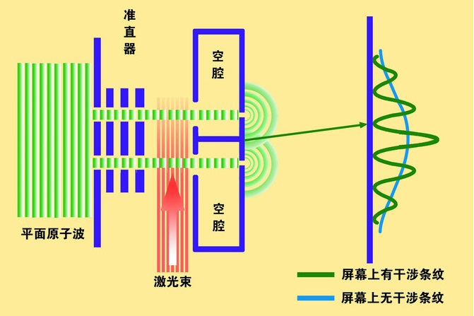
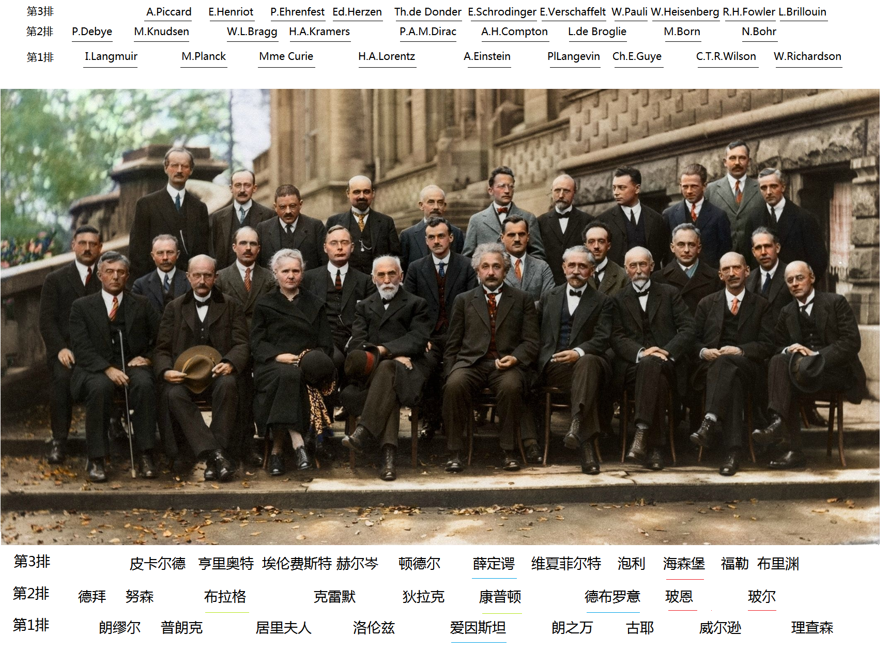
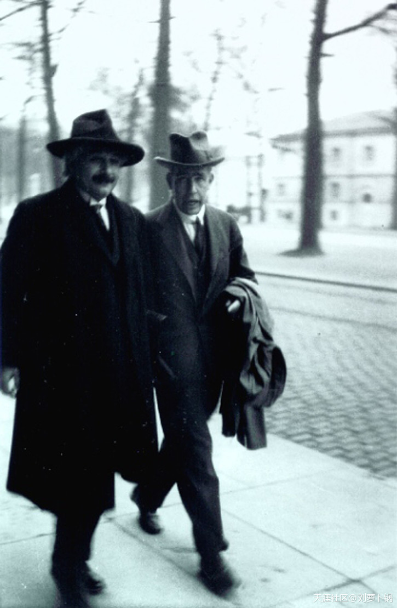
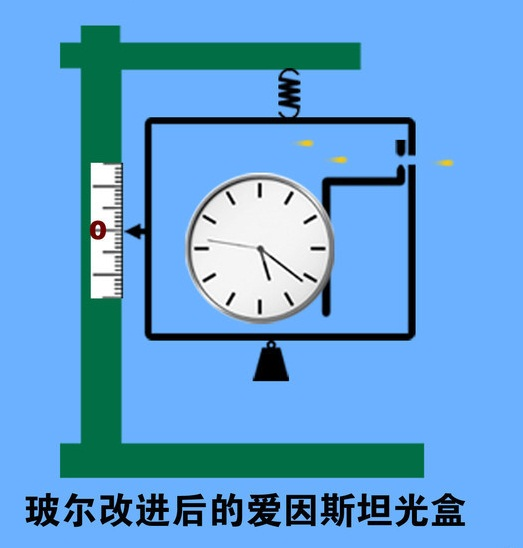
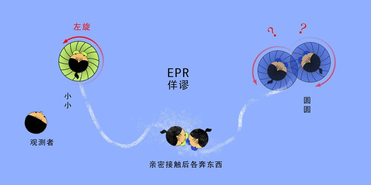
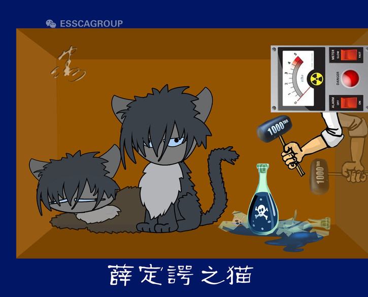

薛定谔管ψ叫波函数。这个波函数完美地符合粒子行为。老薛认定，他的波函数ψ，就代表了波本身。
但是，这样一来，老薛大叔就面临一个大问题：怎么解释这些小家伙的粒子性。比方说，在光电效应、康普顿效应中，光和电子明明都是粒。光也好，电子也好，你把它单独发射到显示屏上，它都会打出一个小点，怎么看，这都是粒子干的事儿。
青年们用求知的眼神望向老薛法师：粒子性怎么破？
老薛法师略一沉吟，拿出一个“波包”，反问道：看上去很娘的，就一定是女人吗？
光子、电子这些小家伙，只是看上去像粒子罢了。实际上，它们只是一个一个小小的“波包”，是一组波长不同的波叠加在一起，凑成一个“波组合”。由于这些“波组合”结构紧凑，体积小巧，所以看起来很像粒。就好比一团毛线，虽然实际上是一堆纤维，但看起来是个球一样。
这样，既能解释波的干涉、衍射之类的现象，又能解释它为什么有时看起来像个粒。更重要的是，可以把“不连续性”、“跳跃性”这些乌七八糟的鬼东西从物理学中赶出去，光复温馨熟悉的经典世界。答完收工！
多么美妙的世界啊！这简直就是又一场革命：反清复明！青年们差点就要被感动得热泪盈眶了。但是，且慢。薛老师在皱眉头。为嘛呢？
因为按照波动方程，波包应该先是散开的，弥漫在空间。当人们检测时，它们必须立即聚成一个点，动作比光还快！为了避免跟相对论闹矛盾，老薛绞尽脑汁，也不能防止波包散开。这些波不仅非要散开，而且无组织无纪律——思想不统一，步调不一致，速度有快有慢，简直就是一盘散沙！而这样一盘散沙，在合适的时机，必须以超光速在某个点聚成团！你信吗？好吧，即便这样，为了光复经典世界，我们也忍了。
但是，把这个推论应用于有两个电子的氢原子时，这些波要求6维空间才行，更过分的是，每增加一个电子，就要增加一个3维空间，否则玩儿不转。这样一算，金元素要237维空间，铅元素需要246维空间！太过分了。这种无理要求，是新旧两个世界都无法容忍的，我们必须坚决抵制，怒目而视！
另外，还有一些让老薛大叔尴尬的问题：即使是波包，也解释不了光电效应和康普顿效应。最简单的，一个高能的光子，可以把电子踢飞，并且有折射角。就像两个台球相撞一样。两个波包相撞，可以做到这样吗？不可以。
还有，波包的电荷怎么来的？电子可是带电的哦，不然怎么叫电子呢？波包是怎么自旋的？这些问题，一股脑摆在面前，老薛大叔才意识到，自己摊上大事儿了！
但是，摊上大事儿的，又何止是老薛？！搞不懂波函数的，是全世界。现在，同志们隐隐约约感觉到，在波函数里，藏着上帝的秘密！任何一个稍稍有点眼光的物理学家，在这个诱惑面前，都淡定不了。
玻恩更淡定不了。他正在后悔。因为，当他看见老薛神妙无比的波动方程时，呼喇一下子想起了爱因斯坦去年的一封来信。老爱在信中兴奋地提醒玻恩，要注意徳布罗意的论文。玻恩于是真的看了这篇论文。但是他没往心里去，只是礼貌性地给老爱回信说：“物质波可能具有伟大的意义。”
然后，他专心地组织团队建立矩阵力学去了，把徳布罗意王子抛在脑后。然后，老薛读到了老爱论文的注脚……。
当玻恩从矩阵中抬起头，一眼望见波动方程时，他眼前一亮，有一种走出森林，蓦然看见田野和村庄的幸福感。而当他丢下矩阵，运用波动方程解决问题时，有一种放下屠刀，端起机枪的驾驭感。这么强悍的东西，跟自己失之交臂，连掺合都没掺合上，怎么说也有点遗憾。
不过，玻恩发现，虽然这个好姑娘被老薛抱走了，但是，所有人都读不懂姑娘的心，包括老薛本人。哈！莫道桑榆晚，为霞尚满天啊！玻恩决定，自己去开采姑娘心中那座金矿！
老薛说ψ是波，还说粒其实是波包。这样，彻底把粒开除了宇宙，以此换取一个连续的、可视的、祥和的世界。但是，正如前面所说的那样，这样一来，就摊上大事儿了，冒出一堆想想都头疼的问题。玻恩当然清楚，解决这些问题是有多难！所以，他决定，放弃老薛的波解释，只要波动方程。
扔掉波，就得回到粒。这是想都不用想的答案。但是，事情真的这样简单吗？当然不是。如果ψ不是波，而是粒，那么，怎么解释“弥散的云”呢？ψ很清楚地描述了这朵故乡的云，把温馨的经典图像，展现在迷失蛮荒的我们面前。现在，玻恩老师要用粒去解释这朵云，何从下手？！粒组成的云，沙尘暴？！雾霾？！！
哈，玻恩，你是在开玩笑吗？
物理学家们很快就笑不出来了。因为玻恩给出的答案，比沙尘暴和雾霾还可怕：概率。
ψ描述的那朵云，不是真实的波，而是粒子在某处出现的概率！在不同的点，它出现的概率值不同，并且分布得极具规律美感，就像波那样妖娆地展开。所以，ψ其实是“概率波”。
What纳尼神马？！你你你说啥？概概概率？你确确确定自己是一名物理学家，而不是赌徒或算卦的？！！
又没人憋着标准答案采访你，结结结巴啥？就是概率！这不是占星学也不是博弈学，而是真正的物理学！
概率！概率！
概率就像一只狐狸，闯进了鸡窝，又像一颗小行星，撞上了物理星球，整个物理界都炸了锅，还带着冲击波！
是不是物理界的神经太脆弱、反应太夸张？！当然不是！概率这次出现，不是来挠痒痒的，而是在挑战物理学的基本宗旨——决定论！
什么是决定论？
想理解这个概念，我们先得搞搞清楚，什么是物理学。
所谓物理学，就是研究物质结构、相互作用、运动规律的自然科学。从本文开头，我们就八卦了物理学的兴起，它源于人类对大自然强烈的好奇、以及对掌握自然规律的迫切需要：我们为什么会在这里？花鸟虫鱼、山石土木、云天星辰、风雨雷电，春夏秋冬，日升月落，莺飞草长、生老病死……为什么会有这些稀奇古怪的东西？这一切怎么发生的？东西为什么不朝天上掉？月亮姐姐为什么不会掉到地上？明日此时，太阳、月亮还会在这个位置出现吗？500年后呢？
带着这些问题，姥姥、村西马大爷、占星家、神学家、哲学家、数学家等纷纷给出不同的答案，而聪明的我们，靠观测、验证，大浪淘沙，从泰勒斯、毕达哥拉斯、苏格拉底、墨子、柏拉图，到亚里士多德、欧几里得、阿基米德、达芬奇、托勒密、哥白尼、伽利略、开普勒……逐渐摸索出一套科学方法，终于可以用人类最精确的语言——数学，来描绘万物规律，这就是物理学。它给出的答案明确、具体，绝不模棱两可。诚实、可靠、清晰，是它的标签，是的，这就是物理学！
到17世纪，牛顿降世，物理学到达一个最辉煌的巅峰。牛爷以来，人类不仅能解释天上地下万物的种种奇葩行为，还能准确预测它们以后的猫腻，甚至只通过计算，就能找到素未谋面的行星！下一次九星连珠在什么时候？明年中秋节午夜火星在什么位置？1000年后的第一次月食将在哪个地区几时几分几秒出现？这些在以前看来，神仙都搞不清楚的问题，物理学家们都可以清晰、肯定地告诉咱俩！这个时期，如果要在地球上评选最拽最牛最值得骄傲的人群，他们一定是物理学家！
我们相信，世间万物都乖乖地听物理定律摆布。在相互作用下，事件一个一个发生，前面发生的事，决定后面发生的事。我朝你家玻璃上扔石头，玻璃会碎，你家人会到窗前查看到底是谁干的……最简单的例子，就像打台球，从你击出母球开始，球桌上所有球将来的位置，就已经确定了。因为球之间、球与桌之间的相互作用，都严格遵循物理定律。这个结论毫无问题，因为这种实验，是可重复的。看过“花式台球表演”吧？高手们可以把“同一个”高难度表演重复多次，只要器械条件相同、球的位置相同，表演者把出杆的角度、力度精确地控制在允许范围，就可以重复预定的结果。再说一遍：这个结果，是事先设计好的。这说明什么？说明我们只要掌握了足够多、足够精确的条件、数据，就可以根据物理定律，预测事物的将来。
台球，是一种比较理想条件下的运动模式，因为球是标准圆球体，球桌是水平的，桌面是平整的，连表面的摩擦力、弹性什么的，都有严格的标准，比较容易计算。物理学家们有这个自信：我们可以像对台球那样，对自然界的一切行为进行准确预测。只不过，大自然的条件更复杂而已。而在大自然里，一块石头从山上滚下来，我们只要掌握了相关事物的精确形状、位置、质量、角度、弹性系数、摩擦系数等等，就可以准确地预测，这块石头将与哪枝野花相遇、被哪块石头硌偏、撞到哪根树干、最后到达哪里，等等。这个原理，可以推广到空气、水等更复杂的运动。我们现在不能精确地计算各个空气分子的运动，那是因为目前，我们还没法精确掌握与之相关的海量数据，还不具备处理那么多数据的计算能力，但这只是能力问题，并不是不可能的事情。即使目前我们不具备这个能力，也能够利用概率，发展出统计物理学，来应付这些海量庞杂的运动，预测复杂运动的整体趋势。所以，物理学家们有理由骄傲！
于是，骄傲的拉普拉斯同志写了一本科普书，在介绍概率这个权宜之计时，他牛哄哄地写道：“我们可以把宇宙现在的状态，当成它过去的果，以及未来的因。假如，有这样一个智者，他能知道某一刻大自然的所有精确数据，并且能够处理这些数据，那么，宇宙中所有物体的运动，都会包含在一条简单公式中。对这位智者来说，没有什么是不确定的，而未来，只会像过去一样，清楚地展现在他面前……”知道现在，就可以倒推过去，预测未来！这番宏论，就是传说中的“拉普拉斯决定论”，文中的“智者”，就是传说中的“拉普拉斯妖”。他代表了物理学的根本宗旨。是的，明确地告诉人们，万物何以至此，万物将会如何，这才是物理学，光荣的、骄傲的物理学！
麦克斯韦的电磁论、爱因斯坦的相对论，挑战了牛爷的理论根基：时间观、空间观，但是，他们没动“决定论”一根汗毛，反而让决定论更加灿烂辉煌、固若金汤：我们搞懂了宇宙最快的光速运动、摸清了来无影去无踪的电磁运动，计算更精准了，水星进动、光线偏折、时涨尺缩……物理学家掌握宇宙深处的天体运动，比心腹掌握上司的软肋还精准！这意味着什么？意味着我们对将来的预测更靠谱了！决定论，是宇宙真理，虽然，这将是一项长期的艰巨任务，是需要几代人、十几代人、乃至几十代人长期艰苦努力才能实现的目标，但它是宇宙真理啊宇宙真理，是物理学的根本指导思想，是振兴物理的第一要义，值得把咱们及子子孙孙都豁出去，我们必须牢牢掌握决定论的精髓和核心，坚持几个250年不动摇！
而现在，玻恩同志，在全物理界上下玩命学习、拼命领会、死命贯彻决定论的大好形势下，你突发奇想、猛出怪招、疾走邪路，搞出个什么“概率”来，你对得起那些在暗夜中摸索的先驱、风浪中拼搏的前辈、荆棘中挣扎的英雄吗？他们，殚精竭虑，用科学把人类从蒙昧引向文明；他们，呕心沥血，让人类的认知突破一个又一个极限，让地球闪烁着智慧的光芒！正是这些天才、伟人，缔造了物理学的无上荣光！而你，玻恩，现在却来告诉我们，世界是靠概率支撑的，上帝这个老顽童在玩儿骰子，而我们，只能躲在概率的窝棚里胡猜：月亮此时出现在天心的机会是38.38%，明早5点太阳八成出不来，登月飞船发射出去有2.50%的可能性会飞到火星？！大概、可能、也许……这是物理学？这是侮辱物理学！街头摆摊算命的都不好意思这样讲话！你以为你是领导吗？
什么？你说麦克斯韦、玻尔兹曼、爱因斯坦、拉普拉斯等大牛也是玩概率的高手？都磨叨多少遍了，那是权宜之计，权宜之计你懂吗？只是为了对付那些没法收集、无力处理的庞杂数据，所用的一种技巧、一条捷径而已，说穿了，是人类能力不足，并不等于“世界本身就是无法确定的”。这跟玻恩说的概率是两码事。还记得吧？爱因斯坦鼓捣电子跃迁时，在没动用统计学的情况下，他的公式里，出现了“概率”这个二货，于是，老爱郁闷地停下了这个工作，看来不找到消除概率的办法，他是不打算继续了。现在，玻恩却兴奋地跳出来，明确指出，用概率去理解世界，并不是由于我们人类能力不足，而是世界本来就无法确定！
这开的不是国际玩笑，是星际玩笑！
有人问你：“嗨，这位披着物理学家外衣的先生，您能为我预测下一次月食吗？”
“好的。稍等。”你边答边拿工具，不是纸和笔，而是一把骰子。掷出去后，你数了数点数：“呃……下一次月食大概……可能……”
“你确定？”
玻恩说，薛定谔的波函数不是具体的、真切的物理现实，而是抽象的、魔幻的概率。他还向经典宣战：“在原子世界中，我倾向于放弃决定论。”不过，他依然留恋故土的坚实感，特意强调：“概率本身是遵守因果律的。”因果律的事情，我们先放到一边。单说概率，老薛一听玻恩给心爱的波函数扣了顶不靠谱的帽子：概率，第一个跳起来反对：你搞不清不要紧，但是你因此说世界“本来就搞不清”，那就是你的不对了！
老薛认为，玻恩是被能级、跃迁这些奇葩概念施了魔咒，才做出如此判断。他说：“我没法想象，一只电子会像跳蚤那样蹦来蹦去！”
反对玻恩的，当然不止老薛一个，他的队友里，爱因斯坦是最坚定的一个。按说，把概率这条狼引入量子内室的，老爱应该是第一人，10年前，他解释光子的自发发射时，引出概率这条狼，虽然它很好地搞定了量子跃迁，但是，为了不伤及因果性，老爱不玩儿了。10年后，面对玻恩的概率解释，老爱愁肠百转，他认为，新理论绕来绕去，也没让我们离旧理论的未解之谜更近一点。他说：“无论如何，我确信，上帝不掷骰子！”就是这句名言，让多数人忽略了老爱维护的核心问题。这个话题我们以后再谈。因为有人比老爱还愁。
前面说过，把薛定谔吵跑后，玻尔顿觉时间和精力充裕起来，于是把空虚寂寞冷的目光锁定了海森堡。
老薛在时，海、玻意见完全一致，好像没什么可吵的了。但是，小海的侥幸很快就化为泡影了。跟老薛大战几百回合后，玻尔已经开始相信，波动说也许有一部分是对的——虽然当着老薛的面时他死不松口。小海害怕的事情终于发生了，在量子力学的解释上，玻尔要求，波粒都试试。不要说试试了，在小海面前，波动提都不要提，一提他就急，更别说是他最在乎的玻尔在提，而且与他的矩阵力学相提并论！
所以小海强烈反对。我们知道，面对反对，玻尔的本能反应，就是说服之。说服的意思是，说到你服为止。无敌神功再度发作。
这下海森堡傻眼了，因为从此，不论清晨还是深夜，随时会有人敲门，把他从不管什么梦中惊醒。是谁？玻尔。干嘛？聊天。
玻尔只要想起来，就会找海森堡聊，毫无节制。你知道，夜半鸡叫虐身，夜半聊天虐心呐！
实际上，就算没架可吵的和平日子，小海处也常有玻尔出没，一聊就是大半夜，只是没这么频繁。当然，在平时，玻尔也不是每次降临都是来谈心的（不然哥本哈根的天才们还不都被聊跑），有时也搞搞文化娱乐活动。总的来说，跟玻尔混，还是相当刺激的。比方说踢足球。
现在，小海正在忍受这个煎熬。自从把老薛折磨走后，玻尔越来越像热锅上的蚂蚁，急着弄清真相。不管他逮到谁，都只有一个话题：解释量子力学。而海森堡，是玻尔的重点光顾对象。于是，可怜的小海不得不随时警惕玻尔来袭。聊天的内容，是比聊天本身更让人头疼的事：波粒二象性。
跟老薛吵架后，玻尔越来越感到，必须认真对待徳布罗意的波粒二象性了。然后，玻尔和小海悲催地发现，“波粒二象”说起来挺酷，但是无论如何，你也没法把粒和波两个图像联系到一起——它俩硬件软件都不兼容！就算你能让张飞爱上吕布，也没法让波粒共融。
更不幸的是，玻尔和小海慢慢发现，他俩的观点，也像波粒一样，越来越互不相容。海森堡的出发点很单纯，他用数学去描述可观测的现象，至于数学背后的故事，他不太在乎。而玻尔，更希望摸清数学背后的物理意义。对波粒二象性，海森堡想用粒子主导。但玻尔希望找到一个办法，让波粒和平共处。
所以，在波粒和平共处之前，玻尔和小海之间，爆发了一场残酷的战争。这是一场真正的持久战，一吵就是几个月。小海的悲哀在于，他不能像老薛一样潇洒地走开。当初，玻尔把这孩子拐到哥本哈根时，几乎是在对整个物理界一再保证，海森堡不会在哥本哈根待太长时间，但是，他一年后，海森堡合同到期时，玻尔做了一件事，给海森堡涨工资，而且力度不小，直接乘以2。赤裸裸的勾引呐！玻恩拿不出那么多工资，也不好耽误小海前途，只好再次受伤。玻尔一定看过三国，把小海当成荆州了。不厚道啊！小海就这样上了贼船。在这段黑暗的日子里，小海一定很怀念哥廷根的幸福生活。他回忆道：我们一聊就没完，一直到午夜，双方拼了几个月，也没什么起色。好在小海年轻力壮，没被累倒。但谁都不是铁打的，俩人都快累散架了。
双方都又累又烦，于是决定分开一段时间，冷静冷静。
玻尔：我去滑雪。
海森堡：bye。
……
1927年2月，玻尔去挪威滑雪，假期有4个星期。班主任溜达去了，最开心的当然是被班主任盯死的海森堡同学。一丝无法抑制的笑意从心底浮上眉梢。终于可以静下心来思考问题了，关键是想几点睡就几点睡。哥本哈根的天顿时晴朗起来。
去年4月28日，柏林的天似乎也很晴朗。不过，小海没心情观察天气，他很紧张。因为，他正站在柏林大学的讲台上，讲他刚创建的矩阵力学。让他紧张的不是矩阵，而是台下坐着的某些听众，比方说劳厄、能斯特、普朗克、爱因斯坦等。这也难怪，任何一个25岁的小伙子，面对这么多业内大神时，如果像国足输球一样淡定，那只能说明他见识短，有眼不识珠峰。
课讲得还算清楚。不过这不是重点。重点是课后，爱因斯坦找海森堡聊天。
老爱问：“你假设原子里有电子，却不考虑它们的轨道，即使我们可以在云室里观测到电子的轨迹。为什么？”
小海做梦都想让老爱提这个问题，因为这样，他就有机会拉老爱入伙。因此他热情洋溢地回答：“我们观测不到电子在原子内的轨道，却可以观测到辐射——这就足以推出电子的频率和波长。一个好的理论，必定以可直接观测到的量为基础。”
“只有可观测到的量才能纳入物理理论？”老爱反问。
“这难道不正是你处理相对论的手法吗？”小海反问道。他认为说到这里，老爱应该就是战友了。
“一个好把戏不能玩儿两次。”老爱神秘地笑了。他认为，用可观测的量去建立理论没错，但只用可观测的量去建立理论，就大错特错了。老爱强调：“是理论决定了我们能观测什么。”
“啊？！”这句话的输入，把小海的大脑搞得差点死机。
“理论决定了我们能观测什么。”不管是谁，第一次听到这句话的人，脑子里一定蹦出两个字：荒谬。小海也不例外。但这句话是爱因斯坦说的，所以他本能地认真考虑起来：我们的理论不都是以观测为基础建立的吗？没有观测，哪来的理论？理论，是人类对客观现象的主观认识。你见，或者不见它，现象就在那里，不来不去，你爱，或者不爱它，事实就在那里，不变不移呀！主观认识，能决定我们从客观世界中看到什么？！如果这是真的，世界也太疯狂了！
老爱当然看得出，眼前的年轻人被这句话困住了，于是继续点拨：在观察之前，我们就会不自觉地，用已有的理论，对观察对象进行某些假设。
这个需要解释下。我们的肉眼靠可见光看东西，于是我们得到了“可见光可以用来观测”的理论，根据这个理论，我们制造放大镜、光学显微镜、望远镜、照相机等，于是观测到了更小、更远、更具体的东西。电磁波被发现后，我们得到了“红外线、远红外线、紫外线、x射线、γ射线也可以用来观测”的新理论，根据新理论，我们制造红外望远镜、x光透视器、射电望远镜等，观测到了原来想都不敢想的东西：人体内部结构、137亿光年外的星系、太阳表面活动的清晰图像等等。
这些观测设备，是怎么设计出来的？我们按照已知的电磁波的性质，假设电磁波在仪器里怎样被反射、折射、放大、聚焦，怎样变成人类眼睛可以接受的图像信息，等等，综合这些因素，去设计、实验、制造、应用。所涉及到的成千上万个技术细节，都是围绕我们已知的理论来进行的。所以说，能看到什么，是选择“怎样去看”决定的，而选择怎样去看，是理论决定的。
“理论决定了我们能看到什么。”现在看看这句话，还荒谬吗？
老爱认为，实际上，观测本身，也是个相当复杂的过程，观测对象发出的信息，比方说振动、气味、声波、电磁波、引力波之类的，传到仪器，仪器按照设计要求，发挥各种作用：接收、反射、放大、聚焦等，然后把信息输出给我们的感官，通过一大串神秘的反应，在意识中形成结果，成为我们的认识。这些过程，是我们事先就知道的。这就是说，我们在观测之前，已经对“能看到什么”有了一个大致的预期。这一切，都是我们的理论决定的。
老爱当时没解释这么细，他只是告诉小海，你那些所谓“可观测到的量”，都是这样观测来的，观测之前，已经用理论做了假定——尽管不是有意的。老爱强调，如果你掌握的理论完全不同，就会做出完全不同的假定，那么，你观测到的那些量，可能也就不同了！
小海听得目瞪口呆，但他又不得不承认，老爱的观点是“有说服力的”。
小海本来是想拉老爱入伙的，没想到不但没说服老爱，反倒被老爱灌输了一顿完全陌生的思想。这个观念来得太突然，他觉得还是回去慢慢消化好些。于是小海提起另一个话题：说好了给玻尔当助手，兼职哥本哈根大学讲师。现在，莱比锡大学邀请他去当教授，像他这个年纪，接到这样的邀请，是个了不起的荣誉，弃之可惜。怎么破？老爱当场建议：给玻尔当助手。小海决定，听老爱的话，出新成果再说。小海这时还没意识到，这场谈话的两个成果：一个新思想，一个新决定，对他将来的前途产生了多大的影响。
1926年底，小海在和玻尔的持久战中，也没忘和泡利师兄通信。一次，泡利聊起他的新发现：电子互撞，当动量p可控时，位置q就不可控。动量p有变，则位置q必变。
泡利总结道：用p眼看世界，或者用q眼看世界，都没问题，但同时用两眼看世界，你就看不清了！
泡利总结完就收工了。这厮总是这样，有了新发现，通常是兴致勃勃讨论一番，然后扔到一边，屁颠屁颠忙别的去了。
现在，泡利师兄在干嘛？又在跳舞？玻尔先生在干嘛？已经在滑雪了吧？这二位的造型，既不适合跳舞，又不适合滑雪，但他们偏偏乐此不疲，灵气可鄙、勇气可嘉啊！一丝久违的、轻松的笑意，浮现在小海脸上。
没多长时间，小海就Happy不起来了，因为这会儿，他脑子有点乱。他始终没忘记自己最大的理想——用矩阵力学一统量子江湖。但是，薛定谔搞出的那个方程，在物理界越来越吃香，原来支持矩阵力学的朋友、同事们，纷纷倒戈，连跟他一起建立矩阵力学的队友玻恩都被波动方程迷住了，自己最敬重最依赖的玻尔，都站出来支持波动说。面对玻尔，小海负隅顽抗了几个月，也无济于事。幸好有狄拉克在。他去年9月份来到哥本哈根，准备访问半年。前不久，他搞出一个量子力学方程，矩阵力学和波动力学，分别是这个方程的两种特殊情况，小狄的这个成果被称为变换理论。有了这个方程，原来波动方程擅长的领域，现在用矩阵处理起来也很方便了——比方说概率问题。在变换理论基础中，不连续性占有重要位置，这让小海心里踏实多了。但是，在处理某些问题时，不连续性就露怯了，比方说电子轨迹。
就算电子是个粒，它总要运动吧？它一动，就会有轨迹吧？这个轨迹，总不会是不连续的吧？
还记得威尔逊云室不？电子每次经过云室中的水蒸气，都会潇洒地划出一道轨迹，你爱看不看，它就在你眼前。一个粒子，飘过空间，划出一条连续的轨迹，这是它的本分。你能怎么办？
现在，小海要独自面对这个看起来很小，其实很大的问题。
上次离开玻尔，海森堡童鞋爆发了小宇宙。这次玻尔离开，海森堡的小宇宙还能爆发吗？
小海希望答案是：完爆。
所以，他给自己出了一道题：从云室里观测到的那个轨道，怎么才能和量子扯上关系呢？
于是，哥本哈根的同行们，总是看见小海飘来飘去，他的思想在游荡，他的脚步也在游荡。因为，爱因斯坦的那句话，正在他心中游荡：“理论决定了我们能看到什么。”老爱没想到，这句点拨，引出了自己无比厌恶的怪物。
好吧，让我们忘掉过去。现在，听从量子论指引，重新审视云室中的电子轨迹，我们能看到什么？
如果电子是波，就不会划出什么轨迹。因为波是缥缈的、飞散的，这样的东西在空中飘过，如果能弄出一道轨迹，那真是活见鬼了。
但是，如果电子是粒，就必须有一道轨迹。这不就结了吗？我们在云室中看到的，正是一道轨迹啊！
是吗？你确定？
别忘了，现在是量子论说了算，它来决定怎么看！量子论认为，不应该存在一条连续的轨迹。那么，云室中那条该死的线是什么？
等等，我们看不见电子，却能看见它划出的轨迹！我们看不见车，却能看见车辙一路爬到天尽头？可能吗？不可能！
那，不见电子只见轨迹说明了什么？说明“轨迹”比电子本身大多了！大多少呢？即使电子扩大几万倍，我们也看不见！什么东西能搞出比自己宽几十万倍的轨迹呢？答案是，没有这样的东西。那么，我们就更该仔细看看，这个所谓的“轨迹”，它究竟是谁？
原来，是比电子大得多的一串水珠！一“串”水珠，是连续的吗？当然不是！
水珠是怎么来的呢？是电子路过时，电离了亲密接触过的分子，把它们变成离子，吸引周围的水分子，聚成了水珠。所以，我们看到的，只是一串断断续续的水珠。这只能说明：电子曾经和这些水珠中心的某个分子亲热过。而不能证明存在一条连续的、完整的路径。
小海已经游荡到了研究所邻近的公园里。午夜，星空冷漠，寒风凛冽。他脚下的轨迹零散模糊，但电子的“轨迹”却越来越清楚。如果电子真的有一个连续的轨迹，那么，我们就可以精确追踪电子的速度和坐标，这个速度和坐标是确定的，所以，可以得到确定的动量p和位置q。p和q一确定，那么，pq=qp。矩阵力学就Game ove了。
泡利师兄说什么来着？当动量p可控时，位置q就不可控。单看p很清楚，单看q也很清楚，两个一起看就不清楚！从云室轨迹来看，泡利是对的，因为这条轨迹不是连续的，所以，就没法精确追踪电子的速度和坐标了。但是，云室轨迹没法定位p和q，就代表用其他方法也不行吗？
我的理论说什么来着？pq≠qp。这是什么意思？
pq不等于qp，qp 也不等于pq，这段绕口令难道是说：你“先看p再看q”，跟“先看q再看p”的结果不一样？
观测的顺序，居然影响观测结果？凭什么？！月亮姐姐在天上飞啊飞，我先看她的位置q，再看她的动量p，这跟你先看她的p再看她的q有区别吗？不管咱俩怎么看，她都会像几分钟前、上个月、十几亿年前一样飞！
等等，小海现在考虑的是量子论，不是相对论。所以，他只能去看那些小家伙的p和q。
天地之间，单影孑立。风，是冷的。星，是冷的。夜，也是冷的。整个公园，都是冷的。但小海却没被冻上，因为他的大脑是沸腾的。他在想办法看电子的p和q。
怎么看呢？拿尺子量？猪脑子也不会想出这么笨的办法，电子那么小，你量个毛啊量！当然是用比它更小的东西了！我们平时看东西，靠的是光子，现在看电子，当然也是光子最合适了！
我们想知道电子的动量p和位置q。现在，先测它的位置q。一个电子没心没肺地飞过，一个光子爱心泛滥地冲了上去……电子只感到它被青春撞了一下腰，一个趔趄，改变了生命的轨迹。光子用它的转折点，得到了电子的位置，但是，这一撞，电子变了方向，这还不算，它的速度也变了！速度变了，动量当然就变了。
原来如此！测量电子之类的小家伙的位置，还真能影响它的动量。进一步考虑这个测量过程，小海发现，根本不可能同时得到精确的位置q和动量p。
我们想要得到p和q，最好的办法，只能是用光子追踪电子的运动轨迹。我们看av或者cctv，分辨率越高，画质就越清晰。光子是波粒二象性的，它有频率，电子那么小，光子的波长（频率）直接决定测量的精确度，光子的频率，就是分辨率，波长越短（频率越高），测得的位置就越精确。但同时，频率越高，能量也就越大。能量越大，撞上电子，对电子速度的改变也就越大，测得的速度就越不精确。如果你想最大限度地保持电子本来的速度，只能降低光子频率。频率降低，对速度的影响倒是减少了，但是，波长增加，测量位置的精确度就降低了！有测量，必有干扰。测一个值，必定干扰另一个值。想把二者一起量个差不多，那p和q就一样模糊。这就是泡利师兄说的，两眼一起看，你看不清。
结论：动量测得越准，位置就越测不准；位置测得越准，动量就越测不准。一起测？做梦吧！这正是：花自飘零水自流，一种测量，两处闲愁。此情无计可消除，才下眉头，却上心头！
还有比这更别扭的事吗？！理论决定了我们能看到什么，这还不算，它还决定了我们看不到什么！原来，上帝在提示我们读他的同时，在最基本、最隐秘的地方，设置了一道底线——掌控自然？哼哼，谁也别想取代我！
摸到了上帝底线，小海激情澎湃，他欢天喜地跑回他的阁楼，一顿方程推导，搞出一个诡异的公式：
△p△q≥h/2π
又是一个不等式！这个奇形怪状的公式什么意思？它就是上帝底线的具体值！
△的发音有种马车飞奔的感觉，念“嘚儿踏”，在这里代表“不精确性”。△p就是“动量不精确性”，△q就是“位置不精确性”了。≥号，以及它后面的h、π，我们都很熟。所以，这个公式告诉我们，同时测动量p和位置q到底是有多不精确。
这里的△p、△q，就是一对“共轭”变量，啥叫“共轭”呢？首先得知道啥叫“轭”。上面提到马车，如果是两匹以上的马拉车，就得让它们速度和方向一样，它们又不考外语，听不懂人话，咋办？就用一个架子把它们连起来，这样，它们就只能共进退了。这个架子，就叫“轭”。所以，“共轭”，就是按一定的规律相互匹配、相互制约的关系。
h/2π是个常数，它的值铁打不动，雷打也不动，那么，△p和△q的变化，就是此消彼长的“共轭”关系了。这就是在告诉我们，你把位置q量得越精确（△q的值越小），动量p就越不精确（△p的值越大）。
那么，如果我们人品大爆发，把动量p量得绝对精确，也就是△p=0，会怎么样呢？这下坏了，△q=∞，位置的不精确性是无穷大！这是什么意思？也就是一个粒子，如果你把它的动量搞得100%准确，那么这时，它的位置在哪儿？答案很恐怖：它无处不在，整个宇宙任何一点都“有可能”！上帝啊！
还记得矩阵力学的基本公式吧：pq-qp=（h/2πi）I。
为什么pq-qp≠0？为什么量子规律不遵守乘法交换律？！这个让所有人大惑不解的谜团，现在终于解开了！答案就藏在公式里！原来，是因为△p△q≥h/2π。
因为△p△q≥h/2π，所以pq-qp不等于零，而等于奇怪的（h/2πi）I。
这真是一个让人无可奈何的玩笑，p和q，就像跷跷板，一头上来，另一头就得下去，不可能两头同时翘起来；又像婊子和牌坊，如果你是认真的，那你只能要其中一个，两者都要，就不伦不类贻笑大方。总之，你得到p，就得不到q。既想闲云野鹤，又想炙手可热，上帝说，你这是得瑟！
不过，用不着担心我们的世界都这么不靠谱，不会出现这种事：你把车速控制准了，你的车就满宇宙乱飞。为什么呢？因为这个误差很小，瞧：△p△q≥h/2π，前面说过，h的值是6.626×10^-27尔格/秒，也就是用十万亿个一亿除6.626，它等于6.626×10^-34焦耳/秒。这个值十分微小。用这个微小的值除以2π（也就是2×3.14），就更小了。
一般情况下，我们测量的△p和△q，数量级都差不多，大约在10^-17左右，10^-17米这个误差，对半径只有10^18米的电子来说，大约是它本身大小的10倍。10倍！这个误差不小。如果让你测长城的位置，测得的误差是它长度的10倍，那就是把长城开除地球球籍了。
但是，10^-17米，对我们人类来说，这点误差可以忽略不计，因为我们接触的一般都是宏观事物。我们测量月亮姐姐、足球弟弟、米粒妹妹等宏观物体，光子撞到他们身上，基本没什么影响，所以还算测得准。所以我们能用狙击步枪准确地击中1000米以外的物体（最远狙击距离目前是2430米），所以我们能把千年后月食的时间精确到秒，所以我们能把车速精确到小数点以后N位，车的位置也不会到处飘忽不定。这是大自然留给我们的福利，否则，什么都搞不准，我们还怎么繁衍到今天？
人类繁衍的事，我们以后再讨论。现在，海森堡正忙着整理他的成果，他把新发现叫做“不确定性原理”。为了说明不确定性，他举例说明，想探测电子的p和q，需要一个高端大气上档次的显微镜，它发射γ射线，来刺探电子的位置。高能光子撞到电子后，返回时报告自己的速度、方向等数据，根据这些数据，我们可以算出电子的位置。为了达到精确，显微镜必须要配备大直径透镜或反射镜，它可以将光聚焦到一个点上。这样，测量倒是精确了，但是，有个大问题，光子撞了电子后，光子返回时，我们没法判断这个光子是从哪儿来的。因为，强悍的聚焦能力，让光子更多地改变了路径。但是，如果减小半径，显微镜的聚焦能力——分辨率也按比例打折，你看不清。看不清怎么测得准？！
与此同时，光子踢飞电子的剧情必定继续上演，所以，不可能测得准。
在经典力学和量子力学之间，不确定性原理的金簪生生划出一道银河，鹊桥在哪里？海森堡测不准。就像他测不准玻尔会怎么看他的新发现。
所以，1927年2月23日，小海给泡利写了封一14页的长信，激动地详述了他的新发现，这一次，又Happy地得到泡利师兄的盛赞：“量子论的黎明到了！”
当然，小海也给玻尔写了一封信。只是时间稍晚。都3月9日了。这时，小海已经把写给泡利的信变成了论文。准备发表论文了，这才写信给玻尔，并且，信里不包括新发现的细节，只包括新发现的消息：“我应该是搞定了p和q的精度问题，论文昨天寄给了泡利。”
是的，海森堡想先得到泡利师兄的有力支持，以防不测——新发现被玻尔一枪击毙。
但是，该来的总归会来。接到海森堡的来信，伟大的、无所畏惧的、百折不挠的战士玻尔扔掉滑雪板，急忙杀回哥本哈根。小海心头一凛。
在玻海大战第二波激情上演之前，我们接着说小海的新发现。搞清p和q这对冤家的关系之后不久，小海又发现另一对共轭的量。能量E、时间t。Et？这对东西怎么会“共轭”？能量是真真切切的物理现实，时间是什么？难道不是人类用以描述物质运动、事件发生过程的一个概念、一个参数、一个度量衡吗？人类为了使用方便，所发明的一个度量衡，会和真切存在的物理现实发生“共轭”？太荒谬了！
其实，一点也不荒谬。记得狭义相对论吧？时空一体，时间跟空间，作为物理量，地位一样，所谓“时空”嘛。而空间，又跟位置q有关。再说能量E，质能可以互换。上部也说过，什么速度啊、动量p啊，这些东西，都跟能量有关。这样看来，q和p“共轭”了，那么，E和t不“共轭”，简直就天理难容。所以：
△E△t≥h/2π
和p、q类似，你把E搞得越准，t就越不准；反过来，你把t测得越准，E就越不准。经历了前面的心跳历险，咱俩已经见怪不怪、不怪反怪了，再坚利的现实，也刺激不了我们坚强的内心了！那么，关于Et共轭，要不要继续深入翻译一下呢？要的。
上面那个怪怪的公式是在说：
你把能量搞得无比精确，△E=0 了，那么，△t=∞，时间的不确定性就纵贯古今！如果你对恋人海誓山盟一辈子的期限还不足言爱，你就给TA个△E=0吧，从宇宙诞生到灭亡，无时不刻，皆有可能——表明你们在万年内结束这段感情的概率接近0。好恐怖的浪漫！
很神奇吗？还有更神奇的。
如果，时间无比确定时，△t=0了，会发生什么？聪明的你算出来了，△E=∞！能量的不确定性无穷大，什么意思？！
意思已经很明白了：能量从0到∞，皆有可能！这就是说，在时间无比确定的那一瞬，将凭空出现巨大的能量起伏！
这一瞬是多长时间呢？取决于时间有多确定！
确定性越低，这一瞬就相对越长，能量起伏就越小。时间越确定，时长就越短，能量起伏越大。绝对精确，能量起伏就无穷大！时间确定度VS能量起伏大小，可以参考相对论的质速关系曲线图，理解起来容易些。
等等！不对啊大师！这样搞法，你当能量守恒定律是空气么？守恒定律跟你们哥本哈根有仇？凭空出现巨大能量起伏？凭空？凭空？！
是的，凭空。是的，它触犯了伟大的能量守恒定律！但是，上面说了，时间不怎么确定时，能量就不怎么起伏，微乎其微，我们感觉不到，测不出；时间精确，起伏越大，但时长就越短——还是感觉不到。重要的是：起伏。翻译一下，就是“起”了还会“伏”。一切尘归尘，土归土，涛声依旧。
我们的时空里，时时处处，沸腾着能量。真空不空。只是，这些能量瞬间生灭，总体平衡。所以听似惊天动地，我们却无知无觉。能量，依然守恒。
但，这丝毫没有降低宇宙的神奇度。我们已经知道，能量，和质量是一回事。能量在时空中生生灭灭，翻译过来，就是每时每刻，都有物质凭空产生，又瞬间消失！物质居然可以在我们的时空来去自如，如入无人之境。这就太恐怖了！想想看，你正在窗前对着秋雨想憋出几句诗来，眼前突然出现半颗火星，上面坐着刚出道的芙蓉姐姐，然后神秘消失，是不是很崩溃？
恐怖吗？崩溃吗？有人认为，我们的宇宙，可能恰恰就是这样诞生的！但是这位童鞋问了：物质凭空生灭，尚可接受，但只生不灭，那不就是悍然违反守恒定律吗？这是需要表示强烈谴责和严重抗议的星际大事啊！弄不好要坚持谴责他一万年不动摇的！
这位童鞋先莫激动，宇宙诞生之类的小事，用不着动用外事部这么严重。我们知道，有物质，就有引力，而引力，是一种负能量——它是一种吸力。凭空出现的物质，被它们的引力场相互抵消，总能量还是零。举个不太恰当的例子：假设地球刚开始是个绝对标准的球体，每个点的海拔都是0。那么，在它不与外界进行物质交流的情况下，要出现一座山，就必定有其他地方低下去。保持总体平衡。这座山就是物质，低下去的地方就是引力。关于宇宙的诞生，咱以后再关心。
海森堡的不确定性原理，提供了宇宙诞生的一种可能，让我们减轻了对“自己是从哪儿来的”的一些疑惑。但是，他自己摊上大事了。
每当悟空想静一静的时候，唐僧就会及时出现，孜孜不倦地开展群众路线教育。小海又在面临这个问题。
玻尔先生滑雪时，脑子也没闲着。他在思考一个老问题：波and粒。一个想法渐渐成熟，但是，缺少有力的支持。听说了小海的新发现，玻尔心头一动，急忙赶回来看小海的论文。
他要跟小海好好交交心。
自从搞上了物理，玻尔就始终被一件事纠结着：波or 粒？
一开始，玻尔相信波，甚至为了波，面对光电效应的无敌战车，他不惜斩杀守恒定律，来捍卫麦爷的王国。对爱因斯坦和徳布罗意兄弟相信的波粒二象，他嗤之以鼻。
矩阵力学建立后，玻尔渐渐转向了粒，面对薛定谔伟大的波动方程，他宁可承担死不认错、悍主虐客的恶名，也要遏制波动的复兴。
老薛走后，他解放思想、转变观念、与时俱进，认清一个残酷的现实：任何抹杀波或粒的企图，都是逆历史潮流而动，都不过是螳臂当车、不自量力，搬起石头砸自己的脚，必将碰得头破血流、自取灭亡。
于是他试图说服小海与波和平共处，结果两人大战数月，互相折磨得筋疲力尽，火烧火燎，却毫无结果。这是他辩论生涯中的第三个败笔——于玻尔而言，没捡到，就算丢了；不胜，就算败了。辩论中，玻尔错过，但从未败过。当然，一旦意识到自己错，他一定会认。
为什么小海死也不服？因为连玻尔自己都不服：波和粒怎么可能和平共处？虽然矩阵力学、波动力学分别表明：粒、波都是必然存在的；虽然双缝实验、光电效应也分别证实：波、粒都是真实存在的。但是，怎么能从物理上去理解，一个又是粒、又是波的世界呢？这将是一幅多么荒谬和不可思议的图像啊！
玻尔的痛，有谁懂？他需要一个解释，给世界。
挪威。童话般的雪山上，玻尔脚踏滑雪板。耳畔，有风掠过。一幅温馨的图像倏然闪现：钱。太俗了！换个说法：货币。硬币、纸币都有正反面，一面是波，一面是粒，它们互斥而又互补。你看到一面，就看不到另一面。但是没有另一面，它就不完整。不要玩儿“折弯两面皆可见”之类的脑残急转弯，全世界人民都知道，这只是比喻。玻尔的这套理论，叫“互补原理”。
但这个解释，只是一个哲学式的物理外壳，它缺少一个强悍稳固的物理内核。
而当玻尔看到海森堡论文时，他知道，这就是他要的那个内核。但是，这个内核与外壳不配套，需要改造。于是，海森堡一直提心吊胆的事件终于拉开了序幕——玻尔带着满脸诚意和执著扑面而来。
玻尔提出的问题是：为什么不确定？
小海的回答是：因为测不准。
玻尔：为何测不准？
小海：电子本来就没有什么准确的p或q。你只有测量了其中一个，它才有意义。但只要你一测量，就会因为干扰，丢掉另一个。
玻尔：你的结论，是从什么推导出来的？波还是粒？
海森堡一听“波”这个字就冒火：波？我讨厌波！好吧，我从来没考虑过什么波。Look，我的显微镜实验，“聚焦能力（分辨率）提高”与“路径改变增大”之间的矛盾，导致我们无法知道光子从何而来；光子踢飞电子造成的干扰，导致我们无法同时获得p和q。很明显，这个结论，当然是从不连续的粒而来！
小海倒霉就倒霉在这显微镜上了。他大概忘了：博士论文答辩时，他的实验题就栽在显微镜上——而且，也是关于分辨率的问题！
玻尔早就看出，这个实验渣的显微镜实验分析中，有一个关键错误：
聚焦导致路径变化，实质上只是折射角的问题，我们知道，折射、反射的计算，早在300年前，就已经被斯涅耳、费马他们搞定了。而显微镜的各类参数，都是已知的，我们可以根据这些数据，倒推光子从何而来；至于动量，根据康普顿效应，光子和电子相撞后，也是可以计算动量变化的。
所以玻尔说：“你的显微镜实验是错的。”
小海的反应很果断——他义无反顾地哭了，内牛满面地跟玻尔吵了一架。这场物理学术交流，差点变成江湖恩怨。
玻尔认为，显微镜无法精确测量p和q的根源是，不可能确定光子是从哪个点入射的。当光子撞上电子，在测量之前，我们没法确定二者的位置，也没法限制光子必须从哪个点入射；同时，不管多牛的显微镜，它的孔径是有限的，也就是说，分辨率有限。这些，都从理论上一致否定了用显微镜精确测量的可能。
其实，对海森堡来说，显微镜实验分析错误，还不是大问题，改过来就行了。让他火冒三丈的是，玻尔认为，必须动用波函数，来分析漫射的光子，波粒结合，才能完美地解释不确定性原理。
为什么不确定？因为“粒”同时也是“波”。是波粒二象性导致了不确定！
具体来讲，用波来解释不确定，更方便。如果把电子看成波，那么，你想得到它的确定位置，首先得要求它在空间越集中越好，界限分明，不能飞散。但是，计算表明，你越想让它局部化，需要的波长种类就越多。举个不太恰当的例子：你用一堆大小、形状差不多的石块，砌一个圆球，只能做到形状上大致类似圆球，因为它的表面肯定起伏不平、石块之间也不牢靠，想让它更牢、更圆、边界更清晰，必须用更小块的材料，比方说石子、沙粒、水泥来填充、补平、黏结。但是，波长的种类越多，它的动量就越模糊。反过来，你想要一个确定的动量，就只能用单一的波长。波长种类越少，波就越分散，空间局限性越差，位置也就越不确定了。所以，不是测不准，是本来就不确定。
海森堡坚决不接受这种解释。
薛定谔的波动方程问世以来，一直仗着讨喜的外表、广袤的人脉，以压倒性的优势，欺负着长相怪异、性格孤僻的矩阵力学。海森堡强烈不满、强烈抗议、强烈谴责，也无济于事，只能深表遗憾。现在，他终于从不连续的粒子性出发，导出了伟大的不确定性原理。这个新成果，让他信心倍增，尤其是得到泡利师兄的盛赞之后。他本来打算，尽快发表这篇论文，用这个新武器击溃波动力学。但是，半路杀出了玻尔，生生要把不确定性原理分一杯羹给波，与粒平起平坐，共同开发！真是岂有此理！不确定性原理自古以来就是粒方的固有领土啊，不可分割啊！海森堡严正交涉，玻尔不为所动。双边关系骤然紧张起来。
互相看着不爽，都想避而不见，以免引发新一轮冲突。但是，这二位的房间门对门，办公室也相邻，一衣带水，低头不见抬头见。不容易啊！
小海情绪很不稳定，玻尔精神高度紧张。改变or维稳？这是个问题。整个哥本哈根的空气变得不和谐起来。大家都很别扭。
一直这样别扭下去，谁都不好受。为了打破尴尬局面，敌我双方同时想到一个终极裁判——泡利。玻尔和海森堡纷纷邀请泡利来哥本哈根一趟：我俩闹僵了，赶快滚过来评评理。但泡利这时在兴致勃勃忙乎别的，果断表示他没时间来当裁判。于是这二位只好硬着头皮，继续杠下去。
凭借“粒”起家的海森堡，对“波”有着天然的、强烈的排异反应。但玻尔的互补原理、以及他对不确定性原理的解释，都是以波粒二象为基础的。“互补原理”不能没有“不确定性原理”。因此，把“波粒二象性”这个古怪玩意儿，妥妥地植入不确定性原理发现者的思想，是玻尔大夫必须完成的高难手术。
玻尔强调：波和粒，虽然是“互斥”的，看上去不共戴天，但实际上，它们是“互补”的，谁也离不开谁，就像一个硬币的两面、一块磁铁的两极。我们单看其中任何一面，都是不完整的。
说到这，那个老问题又冒出来了：既是粒又是波的物体是个什么样？我们能见到吗？
玻尔的答案是：不能。不管何时、何地，也不管你前看后看左看右看垂涎看批判看，总之无论用什么办法去看，电子，或者光子之类的小家伙，只肯给我们展示其中一面，要么是粒，要么是波，绝对不会是二者合体或叠加的“粒状波”、或者“波式粒”。
重点来了：它究竟什么时候是粒，什么时候是波呢？
玻尔神秘一笑：它任何时候都是粒，任何时候也是波。它只是有时看起来是粒，而有时看起来是波。
好吧玻尔，我们全都被你打败了。现在才是真正的重点：它什么情况下看起来是粒，什么情况下看起来是波呢？
这实在是个好问题，因为用词比较准确：“什么情况下”、“看起来”。
玻尔诡异地一笑：这事儿，你说了算。
啊？！
玻尔：也就是说，它什么情况下看起来是粒，什么情况下看起来是波，取决于你怎么看。
啊？！！
所有人听到这句话，都会目瞪口呆。因为这句话，出自一个物理学家之口，而不是一个玄学家、神学家或者哲学家之口。虽然玻尔本身也称得上是一个哲学家。但是，他正在说的，是一个物理问题！
民间传说，苏轼和佛印论禅，相对打坐，问对方看到什么。佛印说看到一尊佛，苏轼说看到一坨屎。苏轼以为得胜。传说中的苏小妹评曰：“心中有佛，看什么都是佛；心中有屎，看什么都是屎。” 断定哥哥输了。这种论断，在玄学、佛学等领域，作为一种机智思辨，用于谈经论道、心灵鸡汤之类的闲事，我们可以理解，也可以接受，毫无问题。但它经不起哪怕是哲学式的严格推敲：如果有人看希特勒、斯大林、东条英机、生化武器、梅毒之类的玩意儿也是佛，那么，TA脑子里装的是什么呢？应该不是佛，而是水，是吧？这种一较真儿就露馅的偈语，如果用在科学上，那就让人大跌眼镜了。
现在，玻尔的观点，乍听起来，简直跟苏小妹的禅悟如出一辙。怎不令闻者瞠目结舌、下巴落地！
玻尔当然明白这一点，所以，他解释得相当清楚：你选择什么观测手段，决定了你看到的是什么。就拿光来说吧，在双缝实验中去观测，你看到的就是波的一面；在光电效应实验中去观测，你看到的就是粒的一面。
举两个简单的例子：
在一个平面上，画两个相切但不重合的圆圈。我们来Look下，它是8？是∞？是眼镜？很显然，三者都可以是，你看它是什么，它就是什么。但它不可能同时是8又是∞还是眼镜。
(^_^) 这是什么？这是一堆数学符号，可是你为什么要把它看成一张笑脸？是的，你在数学公式里看，它们就是数学符号；你把它们这样组合起来看，它们就是人脸器官。
所以，你看到的是什么，是由你自己决定的。你选择怎么去看，决定了你能看到什么。
嗯，理是这么个理。可是，怎么听，也有法师点化青年的意思。
好吧，上面的例子，虽然够直观，够简单，但说服力不那么强，并且有点诡辩的意思。因为，我们讨论的是世界本质问题，用这些抖机灵式的论辩技巧，说得赢，但说不服，说不清，说不通。不能让人真正地理解问题。
所以，下面，咱俩说点正经的。
实际上，我们看世界，都是借助观测工具去看的，这些“工具”，包括手电筒、显微镜、望远镜这些人造物，也包括我们的眼睛、鼻子等等自然物。
用不同的工具，能看到不同的东西，也就是能观测到不同的结果。这个，没意见吧？好的，一致通过……这位同学说什么？你有意见？！
OK，虽然我们的台词里没有这句，但，既然你说出来了，咱俩就较个真儿。
夜。无月。天，是黑的。地，是黑的。上下都是黑的！
黑夜给了你黑色的观测工具——眼睛，而你，却正在用它寻找光明。
光明未现，一袭黑影，却迎面飘来。悄然无声。仿佛一缕风。
但你心中，却惊雷乱炸！难道……？！
强光乍闪。不是雷电，而是你的手电，射出一道光。
一个美女俏生生地出现在眼前。肤白如雪。
黑影怎么变成了美女？答案很简单：因为夜里光线弱，你只能看见黑影。而用手电筒一照，有了足够的光源，你也就欣赏到了美女。用不同的工具，可以看到不同的东西，没错吧？
这还是诡辩！的确，在夜里，有手电和没手电，看到的东西当然不同。但是，手电只是帮助我们看清了事物的本来面目，并不是改变了事物的形态——她“本来”就是个美女，只要我们看清楚了，就能确定她是个美女，不可能我换个观测工具，她就不是美女了。
是吗？你用X光Look Look她，看看还是不是美女？
你这是抬杠，不管用什么看，她也不会变成一条鱼！
OK，不要激动。通过美女的例子，咱俩至少可以在两方面达成共识：A.工具可以帮助我们看到更多东西；B.看到更多东西，会改变我们对事物的认知。就像刚才，对同一个物体，先是被吓死，然后被迷死。
以上没问题吧？好的继续。
你刚才提到“本来”，是吧？你认为，不管什么东西，它都有一个客观的、“本来”的面貌、特性，不管你怎么看，也不管你看不看，它都是那样，富贵不能淫，贫贱不能移，威武不能屈，对吧？而人们要做的，就是用尽各种手段，看清它的本来面目，没错吧？
好的，现在，咱俩就来探讨“本来”的问题。
咱俩在上部已经讨论过，不同动物的感官，各有所长：响尾蛇能看到红外线；蜜蜂可以看到紫外线；大象能听到次声波；蝙蝠和蛾子能听到超声波；老鼠、狗、王蝶等动物的嗅觉比人灵敏成千上万倍；许多昆虫、鱼类、两栖类、爬行类、鸟类和哺乳类动物都能感觉地球的磁场，用它来导航……看，各路英雄都到齐了，可以公平、公正、公开地探讨事物“本质”了。
题目是：上述那个美女的皮肤“本来”是什么颜色？
颜色，对人类的认知来说，是个直逼“本质”问题，因为我们的第一感，就是视觉。世界在我们眼里，就是各种颜色的组合。想准确地观测一个物体，如果只能选择一种感觉，首选就是视觉。不信？买一样东西，但不准你看，只让你从摸、听、舔、嗅中选一样，你肯定不干——哪怕是买吃的。而只让看，不准摸、听、舔、嗅，这个还是勉强可以接受的——回想下，你买食物时，在很多时候，是不是只用看，不用摸、听、舔、嗅就可以买？是的！
现在，你我都同意，通过分辨颜色，来探讨“本来”，是毫无问题的。所以，回到这个问题：上述那个美女的皮肤“本来”是什么颜色？
这还用探讨吗？咱俩都看见了，妥妥的：“肤色如雪”。她很白。
但响尾蛇不同意，因为，在它看来，美女的皮肤是红色的！
响尾蛇话音未落，蜜蜂就笑了，因为眼前这个美女，皮肤明明是紫色的！
噗通！蝙蝠掉下来了，怎么回事？这家伙笑岔气了。在它看来，颜色是没有意义的，因为它既能用眼睛看东西，同时也能用超声波精确地“看”到各种物体，这种“看”法，没有颜色，但能够清晰地分出大小、形状、质感。对蝙蝠来说，这样“看”，也足够清楚了。蝙蝠用超声波“看到”的图像是什么样呢？这个目前还不好说，但可以借鉴B超图像去理解——用B超“看”美女，大致就是蝙蝠对美女的印象。
这下坏了，大家意见不一致！搞少数服从多数也搞不赢，这种事还不好集中。那么，谁的意见是对的？谁看见的是“本来”颜色？
这里，我们公平地、客观地、理性地说，大家的意见都是对的，因为，物体其实……没有什么“本来”颜色！
物体的颜色，是什么决定的？是你选择的观测工具决定的。你用蜜蜂的眼睛去看，她就是紫色；用响尾蛇的眼睛去看，她就是红色；而用蝙蝠的超声波去“看”，她的表面，跟任何颜色的雕像表面都没啥分别，只是质感有别。追问她“本来”是什么颜色，毫无意义。这一点，我们跟色盲患者交流一下，各种颜色的区别，可能会加深理解——谁也不能肯定她“本来”是什么颜色。
可以肯定的是，不管你用哪种观测方法，她的皮肤不可能同时是白的，又是紫的，而且是红的——不要玩儿什么受伤后姹紫嫣红的脑残急转弯，全世界人民都知道，我们是指同一处的颜色，不可能又白又紫又红，把美女换成一张白纸，这个结论依然有效。
白、紫、红，这几种“互斥”的颜色（光），其实都在，只是，你选择任何一种观测方法，都只能看到其中一种颜色。波和粒也是这样，物质是波，也是粒，波粒二象，是物质的“完整”特性，但，不管你怎么去观测，都只能看到其中一面，要么是粒，要么是波。好吧，这就是玻尔的“互补原理”。
玻尔认为，海森堡的不确定性原理，恰好从数学上表达了波粒二象性。而互补原理，则是从哲学上概括了波粒二象性。
上面的颜色本质讨论，一定让人心有不甘：难道，就没有一个统一的认识？难道，就只能让观测工具说了算？难道，颜色就没有一个客观的、公认的本质？
其实，这个问题，我们可以分两步继续探讨：1.颜色；2.我们眼中的颜色。
1.颜色。这个问题，在上部就已经探讨过。不同颜色，实际上是不同频率的光，刺激视网膜后，反映到大脑中的结果。还记得“一块蓝布”吧？我们之所以看它是蓝色，实际上是因为它“不要”蓝色光波，将其反射（我们忽略掉电子跃迁过程）到我们的视网膜。它把蓝色都抛弃了，那么，它“本质”上是什么颜色？肯定不是蓝色！
2.我们眼中的颜色。有多少人想过这个问题：你感觉到的红色，是不是我感觉到的红色？换句话说，我看到红色的感觉，跟别人看到红色的感觉，是一样的吗？如果没认真想过这个问题，人们会天然地认为，大家看到的是同一种颜色，那么，在大脑中造成的“映像”，就必定是一样的。相同的颜色，就是相同频率的光波，对每个人都一样。我们的眼睛能够辨别一部分不同的光波，反映到大脑中，分别形成某个固定的“映像”，就是“颜色”。通过交流，大家能统一认识，一致认定某个波长的光是某色。但是，仔细想想，同一频率的光波，反映在不同人大脑中的那个“映像”，姑且叫“色感”吧，果真一样吗？同样是国旗红，你感觉到的，会不会比我感觉到的淡一点？或者干脆，你感觉到的那个“红”，其实跟我感觉到的“绿”是一样的？你说不可能？那我们只好不厚道地请色盲患者出山证明。有的色盲患者完全分不出红色和绿色，认为它们是同一种颜色。那么，他对这“一种颜色”的感觉，是和你的“绿”感觉一样，还是和你的“红”感觉一样呢？至少有一种颜色，与你的色感不同，或者，和你的这两个色感都不同。
这就出现一个问题，有没有这样一种可能：我们这些所谓“视力正常”的人，所认为的一种颜色，在某种动物看来，其实是两种完全不同的颜色？
答案是：完全有这种可能！
因为，所谓“色感”，本质上是不同光波刺激视网膜，反射到大脑中，形成的映像。不同的动物，视网膜结构不一样，对光波分辨的敏感程度也就不同，色感，当然就不一样了！最直接的证据就是，红外线和紫外线，在我们“视力正常”的人看来，是“无色”，但在蜜蜂和响尾蛇看来，那可是浓浓的、绚丽的色彩哦！那么，你怎么知道，你看来的“纯”红色，在其他动物看来，是不是两种、甚至几种完全不同的色彩呢？
瞧，这就是“观测工具”不同，造成了观测结果不同。
现在回头想想看，那个美女皮肤的“本来”颜色是什么？
玻尔说，脱离了“观测”，去谈事物的“本质”，是毫无意义的。
观测，就是一个相互作用的互动过程，谁和谁互动？观测工具跟观测对象呗！你看，仪表指针的摆动，接收屏上的小点，计数器的声音，监视器上的数据，都是观测对象发出的光啊、电啊、波啊，等等，触发了观测工具引起的。有的观测工具，还主动向观测对象发射光、电什么的，引起反应，用来帮助观测。所以，在观测对象和观测工具之间，至少要进行一个粒子的能量交接，才能完成一次观测。
没有互动，就没有观测。互动作用产生的信息，被观测者截获、处理，变成观测结果。
由此看来，观测行为，不可能不影响观测对象。这些影响，对月亮、沙粒之类的大家伙，倒没什么，可以忽略不计，但对电子之类的小玩意儿，那可是要了亲命了。所以，观测行为必然影响观测结果，造成“测不准”，导致我们对量子行为“不确定”，这是无法改变的事实。
但是，玻尔认为，这样去认识“不确定”，还不够深刻。他指出：波粒二象性，才是“不确定”的根源。物质是不断运动的，量子行为，在粒运动的不连续性、波运动的模糊性之间摇摆不定，这才是“不确定”的本质，你观测也好，不观测也好，它都是不确定的。这句话翻译过来，很恐怖：
量子“本来”就没有什么确定的位置、动量。
结合刚才对颜色“本质”的探讨，结论更恐怖：
离开了测量，我们认识的所有自然量，包括动量、时间、质量、位置等这些物理量，都是毫无意义的。电子的质量是多少？动量是多少？它的位置在哪……这个，没人能告诉你。你必须先确定一个测量方式，从这个测量方式出发，去探讨这些所谓的量，才是有意义的。
上述翻译过来，主要有三方面的意思：
A.离开观测谈物理量，完全无意义。
B.完全没有可能观测的量，完全无意义。这样的量，理论完全用不着。比如上帝。
C.观测之前，电子没有什么动量或者位置，只有你观测了，才会有一个结果，也就是说，观测后，它才具有这些量！
经历了前面的几个广告，A和B，我们都不难接受。唯独这个C，简直让人忍无可忍！
什么叫“观测之前，电子没有什么动量或者位置”？难道，你不去看它，它就没有动量？连位置也没有？！
什么叫“观测后，它才具有这些量”？难道，你看了它一眼，它才突然生成一个动量，或者位置，供你赏玩？！
你以为你是谁？上帝吗？
自从盘古开天辟地、女娲造人补天时起，我们不管观测什么，从来都是不考虑、也不需要考虑观测者自身的。你看，或者不看，山就在那里，不来不去；你测，或者不测，云就那样飘，不徐不疾。是吧？滚滚红尘，浩浩宇宙，会因我们人类看或不看而改变？太自作多情了吧？！
“古人今人若流水，共看明月皆如此”。人啊，生生死死，已经换了不知多少茬了，但是，星星还是那颗星星哟，月亮还是那个月亮，山也还是那座山哟，梁也还是那道梁。物，是客观存在的，不会因为你我眼里有没有它，而改变性质。就算你是村长，星星也不会对你抛媚眼；就算你是皇上，月亮也不会给你笑一个。“花自飘零水自流”，它才不管你有没有“一种相思，两处闲愁”！在自然规律面前，所有人的最终结局，就是“物是人非事事休”，面对生命的脆弱和无奈，我们只能“欲语泪先流”。现在，你却说出“电子本没有动量和位置，我们观测后才有了动量和位置”这种话来，你还是物理学家吗？！
玻尔和海森堡一起点头，是的，我们当然是物理学家！其实，俺俩也很困惑，但，事实如此，俺俩也木办法！玻尔说：“如果谁不为量子论感到困惑，那么，他就是没理解量子论。”
你俩？！上述观点，海森堡全盘同意？你们的架吵完了？
是的，小海接受不了的是波，对于观测行为与物理量的关系，他跟玻尔意见一致。经过两个多月的大战，小海终于投降了，他同意波粒和平共处，共同开发不确定性原理。他在论文中承认，是玻尔让他注意到了“不确定是波粒二象性的结果”，在论文结尾，他对玻尔表示了感谢。这篇论文终于在5月底发表了。
玻海大战也终于结束了。但直到这时，玻尔和小海的感情也没能回到从前。唇枪舌剑太激烈，两败俱伤，伤神伤身伤感情，搞得大家很不爽。后来，泡利同志专门去了趟哥本哈根，总算是消除了误会，平息了这场风波。
对自己在辩论中的一些表现，年轻气盛的小海又羞又悔。6月份，他专门给玻尔写信道歉。
不确定原理论文发表后，各个大学对小海的邀请如约而至。小海这次接受了莱比锡大学的邀请，成为德国最年轻的教授。这时，他还不满26岁。
论文发表前，应小海的要求，玻尔给爱因斯坦寄了一份副本，还顺便谈了一下他的互补原理。这时，他俩还在吵架。把论文寄给老爱，是希望老爱能给个意见。
但他俩失望了。老爱没有回音。原因不详。也许，老爱看到论文后，感到很忧伤，不想回复吧。
这也难怪，纯粹、优雅的物理理论中，突然闯进了“观测行为”这个怪胎，一出场，就挑战物理的根基——物理量的客观性，这不是革命，这是夺命！
本来，搞测量，只是我们取得客观物理量的手段，测量固然重要，但在物理学中，它只是一个必不可少的辅助行为，物理量、物理理论才是主角。怎么搞来搞去，“测量”这事儿喧宾夺主了？这下可好，谈物理，必先谈测量。今天，你测量了吗？不谈测量，物理学家都没法和人打招呼。凭什么啊？！
玻尔滑雪归来后，主要做了两件事：拼命说服小海改论文；拼命改自己的论文。这两项工作都相当辛苦。一个作文超烂的人，一边要改自己的作文，一边还要劝别人照自己的想法改作文，容易吗？！
海森堡让了一步，作文发表了。天才就是这样让人羡慕嫉妒恨：只讨论看得见的东西，得到矩阵力学；而讨论看不见的东西，又得到不确定性原理。上帝是你家的小时工？
而玻尔，还在奋发图强地改自己的作文。入我相思门，我在改作文。曾经沧海难为水，我在巫山改作文。洛阳亲友如相问，就说我在改作文……
和往常一样，内容改了又改，题目也换了又换，这可苦了助手克莱恩：大师，您就不能想好了再写么？干嘛一个劲儿地改？折腾来折腾去，已经完全跑题了！本来，是想写《量子论的哲学基础》，干净利落地推出互补原理。现在倒好，改来改去，不知啥时变成了《量子假说和量子理论的近期发展》，谬之千里啊大哥，你把整个新量子论都绕进来了，互补原理只是其中一部分！你是在学人家侃物理史吗？
其实玻尔也不想跑题的。他是没办法。这篇作文习惯性难产，耗时太长，写着写着，发现离9月份不远了——这个月中旬，在意大利科莫，要召开国际物理学大会，纪念电池之父伏打逝世100周年，会期10天。玻尔打算在这个会上报告量子论的新成果。反正也要写一篇报告，恰好手头这篇没写完——这篇都费劲，再加一篇还不要命！于是笔锋转了几转，就跑题了。
玻尔认为，量子论的主体结构已经完成，他要给整个量子论一个说法。这很重要。
矩阵力学和波动力学建立后，新量子论有了相当成功的运行内核，功能强大，但始终没有一套合适的理论框架，也没有基本原理。就像一支强悍的军队，已经实质上掌控了一方疆土，攻无不克，四海宾服，却没有一套科学的建国理念，没有一个有效的政府组织，全仗蛮力维生。这种场景，有点像攻陷了京城，却一时不知干点啥好的农民军。
现在，终于到了收拾河山、整纲肃纪、结束混乱局面的时候了。
光阴似箭。1927年9月11日，科莫。大会胜利召开。而玻尔，还在紧张地改作文。直到16日，才不得不定稿。因为这天，轮到他讲演，他要读这篇报告。
这是互补原理的首次公开亮相。在互补原理的框架下，玻尔梳理了新量子论的基本脉络，把不确定性原理、观测的离奇作用、概率解释混搭在一起，构成量子力学的理论基础，这套混搭，史称量子力学的“哥本哈根解释”。准备了几个月，玻尔的讲演思路清晰、结构严谨、语气柔和，但大家听起来，却是字字惊雷，如坠云雾，饱受了一场思想过山车——这些新观念太奇特、太疯狂、太不可思议，个顶个的不省心！互斥又互补啊！不确定啊！概率啊！观测逆袭啊！一下子搞这么多古怪，谁受得了？！
看看吧：物质既是粒，又是波；波是连续的，但粒是间断的，所以世界既是连续的又是间断的；波粒互斥又互补，缺一不可，但从不同时出现；你看到的是粒还是波，取决于你怎么看；物理量这东西，你测则有，不测则没有；世界是不确定的，在我们穷追微观世界的路上，这是一道不可逾越的红线；所以它是概率的；概率和不确定性说，因果律靠不住，而不确定性和互补原理说，客观性靠不住；想知道结果？请用波动方程或矩阵！
不管是谁，第一次听到这种话，都会认为说话的人神志不清。如果台上讲演的不是玻尔，台下一定会有很多物理学家联系精神病院。
在物理界的一片哗然声中，量子论三大核心原理——玻恩的概率诠释、海森堡的不确定性原理、玻尔的互补原理，携手强势登场了。
概率，是量子世界的客观表现；互补性，是量子世界的哲学框架；而不确定性，是整个量子论的核心。这一切，都来自波粒二象性。
三百年来，当波粒大战风起云涌，各路英豪逐鹿正酣时，谁曾想到，势同水火，不共戴天的波和粒，有朝一日竟然双剑合璧，催生了疯狂的量子巨人，尚未站稳脚跟，便摧毁了经典物理王国的根基。
这位童鞋问：说得这么热闹，有实验支持吗？
当然有！不然的话，这个神神叨叨、无数牛人欲诛之而后快的哥本哈根解释，早就灰飞烟灭了！
实验名叫“单电子双缝实验”。经过N次的波衍射、干涉实验，咱俩已经知道，衍射、干涉的发生，跟波长与缝的宽度、缝的间距，有密切的关系。由于电子波长太短，想让它发生衍射和干涉，它所通过的缝宽、缝间距必须十分微小才行。前面提到过，也是在1927年，戴维逊、小汤姆逊搞成了电子衍射实验。他们利用的金属晶格，奋斗了一年多时间，只得到了衍射图像——也就是只解决了缝宽的问题。而干涉，不仅需要合适的缝宽，还需要缝间距合适的双缝，可见，想要得到电子的双缝干涉图像，是有多难。当然，除了尺寸问题，还有许多技术难题，比方说，你怎么保证每次只发射一个电子？等等。
所以，这个实验一搞就是几十年，直到2013年，才算完成了全套动作。为了验证哥本哈根解释的预言，全套动作包括：
1.让单电子过双缝，看它怎么过，过去后会怎么样。
2.两缝任意开关，看电子的反应。
3.监控某缝，看看电子究竟走的是哪条。
实验发展的大概历程：二十世纪60年代初，实现了电子束的疑似双缝干涉；70年代中期到80年代末，用电子双棱镜、晶体层间距等代替双缝，取得了单电子双缝干涉的统计结果；从2008年开始，在纳米加工技术支持下，实现了第一个真正的、可供电子进行干涉的双缝，但不能随意开关双缝；2013年，完成整套规定动作。
过程太琐碎，就不细说了。但是为了满足咱俩的好奇心，聊两个技术问题：
足够细微的缝宽、缝间距，先是利用晶体的层间距实现的。晶体的原子排列够规则，间距也够小。但是，不管你怎么弄，原子排列是纯天然自动的，在尺寸等各方面不那么尽如人意。后来，纳米技术的兴起，为制造标准双缝提供了技术可能：用聚焦离子束在100纳米左右厚的氮化硅薄膜上，成功开了两个60纳米左右宽的窗口——这是真正的“狭缝”，还镀了层金！两个窗口的间距为270纳米左右。为嘛要镀金？当然不是为了扮土豪，而是因为氮化硅是绝缘体，电子打在上面，会带负电，电荷积累到一定程度，会骚扰路过双缝的电子。金子性质稳定，导电性强，镀上金，就有了一层绝佳的导电膜，电子打到上面，随时导走，免除了拦路骚扰。
电子发射，还不能做到像手枪那样，把子弹一发一发打出去。但是，可以减少发射量，就像机枪那样，虽然子弹也是连发，但分得出先后，而不至于像水枪喷水那样，无数水分子一泻而出，搞不清谁是谁。这样，在发射的间隔时间内，只要保证屏上只能接收到一个电子，就OK了。接收方面的技术难题，包括接收屏的感应（电子能量的检测）、精确计时等等，就不细说了。对了，实验中，电子的速度大概是12000公里/秒。
由于实验设备高端大气上档次，所以，目前国内还做不了。不过，在国外一些高端实验室，这个实验是想做就做，立等可做，可随便重复。所以，实验结果相当靠谱。下面，轮到咱俩做这个实验了。整套实验设备虽然相当的高端，但基本原理，跟托马斯·杨当初玩儿的差不多：电子经过双缝，投射到接收屏上，Over。整个实验过程，咱俩相当熟悉。下面做个经典的实验，就当热身复习：
一束电子，经过单缝，投射到屏上，会怎么样呢？我们知道，屏上一定会出现衍射图像。这个实验，就是戴维逊和小汤姆逊抢挖的那座金矿：电子衍射实验；那么，电子还是那束电子，经过双缝，投到接收屏上，又会如何样呢？我们知道，被双缝衍射后的两束电子，相互干涉，一定会出现那熟悉的、美丽的干涉条纹。
这说明，电子真的是波。实际上，电子是波这件事，已经被“直接观测”证明。1993年5月，美国人克罗米（M.F.Crommie）和他的同事，在4K温度下，用电子束，把铜表面的铁原子排列成一个圆圈，这个圈很小，只用了48个铁原子，半径才7.13纳米（10亿分之7.13米），铁原子之间的距离，只有0.95纳米。所以，这个圈有一个很酷的名字，叫“量子围栏”。它能围住铜表面的电子。围栏里，可以观测到“同心圆柱状驻波”——它就是传说中的电子。
OK，热身完毕。现在，我们要搞的是，单电子双缝实验。朝双缝发射一个单电子，在接收屏上，会出现什么？
对不起，让大家失望了，是一个小点。没错，是个小点，而不是一滩模糊的“波晕”。小点，这事儿，只有“粒”才干得出来。看来，电子又变回了“粒”！那，为什么一束电子打上去，就能看见条纹呢？
为了看清楚条纹是怎样炼成的，我们一个一个电子来发射，一直发，一直发……发现，电子并不总是打在同一个地方，而是弄得到处都有——国足出身？照这样下去，接收屏上的每一处，似乎都有可能打到。不过，随着电子越打越多，你会发现，虽然每一处都可能被打到，但有的地方多，有的地方少，疏密有致，打着打着，图像就慢慢显现出来了——那个干涉条纹神一般地浮现在屏上！原来，干涉条纹，是由无数小点组成的！宛若像素，打得多的地方亮，打得少的地方暗。这说明，电子还真是按照“概率”落脚的！虽然不知道它一定落在哪儿，但可以算出，它落在各点的概率是多少！这一轮实验，得出两个结论：1.电子行为，果然是概率的；2.至少从显示屏上小点来看，电子本质上还是粒啊！
But，等等，同志们，好像有点不对劲：电子束穿过双缝，被衍射成两束扩散的电子，然后相互干涉，搞出条纹，这很好理解。可是，现在，咱俩每次只发射一枚电子。单电子出发后，发现前面有两条缝，它会怎么过？要过，只能过其中一条缝，顶多发生衍射，它不会发生干涉，干涉这件事，从来都是团队合作，它一个电子，孤孤单单的，跟谁干涉去？以此类推，不管哪个电子，单独上路，它只能通过其中一条缝到达接收屏，是吧？所以，单电子双缝实验，屏上应该出现两个差不多的衍射图像才对，怎么会出现干涉条纹呢？！
可是，屏上偏偏就出现了干涉条纹！问题出在哪儿？刚才的分析，思路清晰，逻辑严谨，高屋建瓴，内涵深刻啊！实践告诉我们，当严谨的逻辑，得出与事实不符的结论时，八成是前提出了问题！
上述有两个前提：1.单电子打到屏上，只能经过某一条缝；2.单电子没法发生干涉。
实验结果是：出现了条纹。
我们现在开始反推：
1.条纹是干涉造成的。而我们每次只发射一枚单电子，所以，每个电子，一定都发生了干涉。
2.如果电子只经过了其中一条缝，它就只能衍射，而不可能干涉。所以，每个电子都经过了两条缝！
然后……它自己和自己发生了……干涉！因为当时没别人，只有它自己！电子自我解决问题的能力，值得广大干部和屌丝学习。
啊？！
一枚电子，在屏上只能砸出一个小点的电子，会“同时”经过两条缝？！穿越这条缝时，也在穿越那条缝！这句话翻译过来就是：在同一时刻，电子可以既在这里，又在那里。
喂，你在哪儿？
我在北京和纽约——这是人话吗？
这事儿，连孙悟空都做不到，老孙分身，那是化身。而电子玩儿的，到处都是真身！
这怎么可能！可是，不管这事儿看上去有多荒唐，它就是发生了，一如你我生活中的所见所闻那般神奇。所以，咱俩强悍的心脏顶得住，可以继续。
上面这些个推论，让我们不得不接受一个残酷的事实：电子可以自己和自己发生干涉！
好吧，就算这样，也不能证明，电子一定是同时穿过了两条缝！
那么，亲，它怎么做到干涉呢？你必须注意，干涉条纹，是由缝宽、缝间距、电子波长相互影响决定的。缝间距不同，条纹也不一样，缝间距过大，就没条纹了。如果电子不是同时经过了两条缝，而是经过了一条缝，比方说A缝吧，那么，它是怎么知道，另一边还有一条B缝，并且，它又是怎么知道两缝的间距，从而计算出自己应该按照某个概率砸在哪儿呢？
咳咳……没错，电子它是个粒子。但是，不是说好了“波粒二象”吗？那，伴随着它的，必然有一种波，就像物质都会有引力，带电物体运动都会伴随着电磁场一样。薛定谔方程也显示有波相伴，玻恩说是概率波。这个很自然是吧？那么，电子前往双缝时，这个概率波也伴随着它，虽然电子的真身最终只经过了一条缝，但它的波是在空中弥漫，完全可以探测到还有另一条缝，并且可以探知两缝的间距。这样，它就知道了应该以怎样的概率砸到屏上！概率波嘛，对概率当然门儿清……咳咳，俺知道，这话听起来不是很靠谱，但是，它一点也不比“单电子同时过双缝”更荒唐！
听君一席话，差点雷趴下。如君所言，电子是个驾着筋斗云飞来飞去的孙猴子，他还是个数学不错的测绘师？电子落脚的概率，不是通过干涉来决定，而是通过自己探测和计算来决定？！它为什么要探测旁边有没有缝？探测范围是多少？有统一标准吗？好吧，就按你说的办：电子驾着概率波，一个筋斗翻到A缝，与此同时，它的波探测到远方还有一条缝，有多远呢？两缝距离是自己身高的270亿倍（电子半径约10^-18米，缝间距270×10^-9米）！如果把电子增高到1.7米，缝间距按比例应扩大到地月距离的120倍！距离虽远，但毕竟有另一条缝在，不干涉下，也过意不去，于是迅速算出落点概率，准备以一个风骚走位上屏。OK，就在它刚要进入A缝、走位、上屏时，咱俩关上B缝，电子会怎么做？是按照算好的双缝间距走“干涉位”，还是按照单缝走“衍射位”？如果它还是走干涉位，那它走错了。因为现在只有一条缝，该衍射才对，干嘛干涉？如果它走衍射位，那它违反了相对论。因为它必须在B缝被关的同时，立即得到消息，才能做到立即改走衍射位。如此遥远的距离，做到这一点，没有有超光速信号是万万不行的！
啊？！这个……世界上最遥远的距离，不是我就站在你面前，你却不知道我爱你，而是270纳米远的那扇窗，它是开是关，无论我知道与否，都是错的！好吧，我承认，我刚才的解释有问题。不过，你有更好的解释吗？
当然！最简单的解释是：电子砸到屏上之前，它是一缕波，概率波。只有波，才会飞散在空中，同时经过两条缝，自己和自己发生干涉！你关上一条缝，就少了一条路，它就没法干涉，只能衍射了！是不是又简洁又合理？
好吧，你的概率波穿过单缝走衍射位也好、穿过双缝走干涉位也罢，然后呢？
咳咳……然后嘛，概率波就来到屏前，按照相应的概率……落到……屏上……突变成了一个小点。
哈！听君一席话，十分想撕书！说着说着，你自己就底气不足了吧？一缕幽灵般的概率波，在空中按照波函数漂移，穿过狭缝，来到屏前，那一刻，它在想什么？是三生石畔的月影，还是五行山下的年轮？以至于一触屏，便立即决绝地坍缩成一个小点？！凭什么啊？那缕旖旎的波哪儿去了？传说中的72变？！
这个……出于某种不为人知的原因，也许，将来会搞清楚……
不为人知？！是官员财产？是国家机密？难道都是？！
……
这下坏了，不管电子怎么做，都会得出一个荒诞的推论。但是，单电子双缝实验的干涉条纹，却结结实实地摆在我们眼前，不容置疑，谁质疑我跟谁急！电子究竟是怎么做到的？干涉条纹的出现，到底是电子的测算成果，还是分身过缝的干涉结果？电子过缝风骚走位的背后，到底隐藏着怎样不为人知的秘密？砸上接收屏之前，电子到底是驾着概率波的粒，还是纯粹飘渺的概率波？敬请期待终审裁决：观测实验！
实验很简单：看看电子倒底是走双缝还是单缝。
如果走双缝，那么，在上屏前，它就是概率波，上屏后才突变成了粒。
如果走单缝，并且产生了干涉条纹，那它就是驾着概率波的粒。
可是，有一个大问题：电子那么小，怎么“看”呢？最早提出要窥视双缝的费曼说，用光子观测之！所以这个实验也叫光子窥探。所以这个实验的原理就是：将仪器（这里就叫“监视器”吧）安在两缝，发射光子，撞上路过的电子，检测光子的散射角，就能判断电子行踪。但是，这样搞，会遇到一个解决不了的问题：测不准原理。前面说过这事儿，因为电子太小，想搞准电子的位置，就得用高频光子，用了高频光子，位置倒是搞清楚了，但也把电子踢飞了，严重干扰了电子的正常走位，就好比跳水健将起跳后，到半空被一条大汉凌空一踹，预定落点、动作全废。电子遭此一踹，什么干涉、衍射，就都别提了。所以，这样搞法，与其说是“观测它路过哪里”，还不如说是“不管它路过哪儿，一律踢跑”，改变了监视对象的正常行动，就达不到“窥探”的目的。
怎么办呢？造成这种尴尬局面的原因，是光子能量足以踢飞电子。咱俩找不到更小的东西替光子去踢，却可以找到更大的东西替电子挨踢，体型大到让光子不那么容易踢飞它。于是，就有了“原子双缝窥探实验”。原子是“质子+中子+电子”的混搭，这些小东西都有波粒二象性，所以原子过双缝，也能搞出干涉条纹来。是的，这个替身非常完美。
注意，原子来了！它像一缕清风，又像一支无影箭，迎着双缝大步来！它会经过哪儿？守在双缝旁的两个监视器，纷纷射出娇小敏捷的光子，Yes！有的光子撞上了原子这个庞然大物，螳臂当车的光子惨遭散射，横冲直撞的原子行踪暴露了！它路过了这条缝！哈！终于……咦？！
干涉条纹不见了！
这是怎么回事？！就连最小的氢原子，也比电子质量大8个数量级，也就是1000万倍以上，何况是光子？光子撞上原子，就像皮球撞上卡车，单从这一撞的能量上来看，对原子的预定动作，产生不了决定性的影响。
但，干涉条纹神秘消失了。就像从未存在过！见鬼！
关掉监视器，让原子自由自在地飞，干涉条纹又诡异地出现了。就像从未离开过！见鬼见鬼见鬼！
究竟发生了什么事？！单粒子过双缝，会产生干涉条纹，为了弄清楚条纹到底是“过双缝自我干涉”、还是“过单缝自我测算”产生的，咱俩需要“看”清楚粒子究竟路过了哪些地方。于是就“看”。然而，只是在人群中多看了你一眼，知道了你路过哪儿，你条纹却消失了——这就是说，你路过这儿，就不会产生条纹了！搞了半天，我们还是不知道，在可以产生条纹时，粒子是怎样路过的！
你不看他，他就把游戏玩儿得鬼泣神惊，你看他，他就把Pose摆得爱岗敬业，粒子拿人类当老板耍？！本来是想拿这个实验做终审裁决的，没想到，终审本身扯进了案中案！
这让我们产生了一个新的疑惑：导致条纹消失的，到底是“观测”，还是“泄密”？
这里要解释下：所谓观测，是指“看”的过程，比方说通过发射光子等方式，去探测观测对象的行踪。所谓泄密，是指“可看”的结果，也就是观测对象的行踪信息被泄露出来，这个信息可以被我们看见。
二者的区别是：
“观测”，你去看，不一定看得见。比方说，你用波长过长的光子去探测，光子被散射后，你还是搞不清楚粒子的行踪。当两条原子路径的差，小于光子波长的一半时，就完全搞不清原子倒底路过哪条路径。
“泄密”，不去“测”，也可以看得见。比方说，原子飞着飞着，掉了钱包。咱俩捡到钱包，就看到了它的路径。
总之，你“观测”，不一定得到信息；你得到信息，不一定非要靠“测”。
概念搞清楚了，那么，现在回到这个问题：导致条纹消失的，到底是因为我们去“观测”，干扰了它，还是因为我们得到了它的信息——哪怕没干扰它？
这个问题，引出两个实验：观测实验、泄密实验。
先是“观测实验”。重点在“测”。发射波长很长的光子，让它撞击原子。由于光子波长太长（能量太小），被原子撞飞散射后，我们还是测不出原子行踪。但是，这一撞表明：观测行为已经对原子造成了骚扰——尽管这个骚扰特别轻微。猜猜看，干涉条纹还在不？
竟然还在！这说明什么？
说明，我们也“测”了，也“看”了，也造成“骚扰”了，但是没看准，干涉条纹就不消失！
下一个实验：“泄密实验”。 这个稍稍麻烦点：既要知道原子行踪，又不能骚扰它，怎么破？聪明的实验物理学家还真想出了办法！咱俩都知道，原子得到能量后，成了土豪，处于很能得瑟的受激态，一得瑟，就会掉钱包——发射光子，跌回屌丝态。我们要做的是，守住两个狭缝，只要捡到钱包，就能确定它究竟走了哪条路。
用来捡钱包的设备是一种“空腔”，每缝配备一个，双缝当然就配备俩空腔，激发态的原子路过A腔，就会从A缝飞到屏上，路过B腔，就会从B缝飞到屏上。
这项试验，有个技术细节：要让原子保持受激状态的时间长一点，以免刚出发，还没进入空腔，就把钱包得瑟丢了。
瞧，一个个土豪原子穿过空腔，越过狭缝，撞向接收屏。这一路走来，钱包纷飞。这回，我们想知道这些土豪路过了哪条狭缝，就简单多了：A腔捡到钱包（接收到光子），原子就是路过A缝；B腔捡到钱包，原子就是路过B缝。我们没“测”，原子一路上丝毫也没受到骚扰，干涉条纹还在不？
竟然不见了！干涉条纹神秘消失了！！为什么？！还不赶忙看看，不用空腔，结果会怎么样？

泄密实验。有兴趣的话可以了解一下“量子擦除实验”。
尽管经历了那么多，咱俩还是会被这个实验结果吓到：不用空腔，干涉条纹又神一般地出现了！
为什么？！面对这个实验结果的人，只有两种情况不会抓狂：1.他没看懂；2.他是上帝。
同样是土豪原子，同样是边走边掉钱包，同样是在泄露信息，同样是一路丝毫没受到观测者的骚扰，但是，一个实验有干涉条纹，一个实验没有干涉条纹。而两个实验的唯一区别是：是否可以通过钱包判断它的行踪！
钱包掉在空腔里，我们可以推断原子走了哪条缝，于是干涉条纹消失；没有空腔时，我们即使捡到钱包，也没法判断土豪原子究竟走了哪条路，于是干涉条纹出现。
看来，只要泄露的信息对我们有用，干涉条纹就消失，泄露的信息我们没法用，干涉条纹就出现！
问题是，原子是怎么知道，它所泄露的信息，哪个对我们有用，哪个对我们没用？！
在两个实验中，土豪原子掉了钱包后，在钱包还没“落地”时，原子都是继续往前飞的，它不可能停下来看看，钱包到底掉在哪儿，并且也没时间分析掉在哪儿对人类有用，从而做出干涉或者不干涉的决定。但，它做到了：只要你能判断我的行踪，我就不干涉；在你没法判断我行踪时，我才肯干涉。
它是怎么做到的？说到这儿，是不是感觉后脊梁一阵发凉，一种毛骨悚然的感觉倏然袭来？
实验的结果：
1.当我们知道粒子行踪时，不管用的是啥招，也不管有没有骚扰到它，干涉条纹都会果断消失。“知道粒子的行踪”，也就是确定它穿过了哪一条缝。翻译过来就是，当它确定地穿过一条缝时，就没有干涉条纹。它在什么情况下确定地经过一条缝呢？在它的信息可供我们了解其行踪的情况下。这句再翻译一下：不管是你“测”来的信息，还是它自己泄露的信息，只要你可能通过这些信息了解它的行踪时，它就立即给你一个确定的行踪。
2.在出现干涉条纹时，我们完全不能确定粒子走了哪条路。这句话翻译过来就是，在出现干涉条纹的情况下，我们完全不能确定“粒子不是同时穿过了双缝”。那么，根据1，只要它确定路过一条缝，就不干涉。而不干涉，就不会有条纹，所以，我们只好承认这个假设：出现条纹，是因为粒子同时经过了两条缝。
什么东西能同时经过两条缝？波。
综上，在我们没可能了解其行踪的情况下，物质表现出波动性，没有什么确定的动量和位置，或者说，它处于所有可能性的叠加态，各种可能性的概率不同，但不为0，它“无处不在，又无处在”；而在有可能了解其行踪的情况下，这些可能性立即集中到一个点上，在这个点上的概率为1，物质表现出粒子性，你可以观测出位置、动量之类的物理量。
再翻译一下：你不看它，它是虚无缥缈的波，呈叠加态；你一看它，它立马坍缩成粒给你看！这就是让你抓狂，让你神伤，披靡万千牛人，刺激无数心脏的“波函数坍缩”!
一缕波怎么知道自己何时应该变成粒子呢？它是怎么变的——坍缩的过程和机制是什么？上帝，你是在考验人类的承受能力吗？！
薛定谔方程与这些诡异的实验结果，神迹般地保持一致，那个莫名其妙的波函数，不仅在方程里排布迷阵，它竟然还真的游弋在空间，一本正经地演给你看，好让你开窍：这个世界是有多么的不可思议！
哥本哈根解释如果真的是荒诞的，那倒没什么，古往今来的荒唐事儿多了去了，也不多这一个。愁人的是，实验表明，面对这个荒诞的世界，不信荒诞的哥本哈根解释，倒显得荒诞了。
咱俩紧跟物理学家们踉踉跄跄的脚步，兴致勃勃地攀爬到今天，却发现前方的路越来越奇诡，路上的风景，越来越让人抓狂。让人稍感安慰的是，物理学家们一点也不比咱俩好过（这是啥心态！）：
玻尔：如果谁不为量子论感到困惑，那他就是没理解量子论。
薛定谔：如果最终，量子力学被证明必然导向这种结果，我将后悔我的名字竟然会和它联系在一起。
爱因斯坦：我像鸵鸟一样把头埋在沙子里，就是为了不看到量子论那丑恶的面容。
海森堡：我们正陷入极为困难的境地，神经都要崩溃了。
费曼：没有人真的理解量子力学。
克拉默斯：量子力学很像这样一种理论，它先让你笑俩月，然后让你哭一年。
它毁的不止是三观，更有人类千百年来积累的知识自信。我们的每一个新发现都在说：你原来的认识是错的！还有比这更愁人的吗？
好吧，就算识尽愁滋味，我们也无怨无悔。思想，只有点亮在追寻真理的路上，生命才有意义。所以，就算是为哥本哈根解释做个小小的总结，我们也要“为赋新愁强填词”：
江城子·哥本哈根诠释
物质迷云量子说。它是粒，也是波。互斥互补。演化时间河。函数本征概率波。一观测，便坍缩！
人机测量影响多。是什么？凭观测。不等共轭。不确定为核。挑战客观抛因果。二象性，作俑者。
哥本哈根解释后来成为量子力学的主流解释。所谓“哥本哈根解释”，它的版权并不归哥本哈根，因为它的成果不全是哥本哈根的人做出的，只是以玻尔研究所的学术群体为代表。不管你是研究所的、卫生所的还是派出所的，也不管你是哥本哈根的、哥廷根的还是阿根廷的，只要你拥护哥本哈根解释，就归为“哥本哈根派”。这不是一个具体的组织。不是哥本哈根成员，也可以是哥本哈根派的主力，比如玻恩；在哥本哈根访问学习并做出贡献的，也可以反对哥本哈根解释，比如狄拉克。
嗯，既然提到这两位了，那就接着聊聊他们的事儿吧。
有了矩阵力学、波动力学的数学基础，又有了概率诠释、不确定性原理和互补原理这三大核心原理，新量子力学就算是建立起来了。但是，打下了江山，并不代表这个国家能正常运转起来，要做的事儿太多了，建国，好像并不比造反轻松。放眼物理世界，量子王国内外形势都不容乐观。从内部来看，虽然有互补原理拉关系、和稀泥，但矩阵力学、波动力学两大军阀还是互不愿理，仍然各占山头、各展所长，矛盾不断，亟待协调统一；从外部看，相对论对量子论作冷眼旁观状，似乎并没打算支持量子论的建国大业。虽然旧量子论和矩阵力学引入了狭义相对论的部分思想，但整个新量子论并没有得到相对论的支持。这可不是什么好兆头。要知道，相对论似乎已臻化境，独步天下，把宏观世界治理得服服帖帖，小到沙尘粒，大到银河系，无不令行禁止，尽在掌握。政通人和，源于相对论体系的完整自洽。对于一个如此完美的体系，最好的办法是与之并肩携手，而不是与之不共戴天。即使你要建设有量子特色的物理理论体系，也犯不着执意与其他所有理论体系为敌。毕竟，和平与发展才是主题。是吧？
所以，把量子论与相对论结合起来，引入先进思想，让矩阵力学和波动力学统一起来，做到外部和平、内部和谐，成了量子群英角逐的下一个目标。干这种事儿，除了卓绝的天才，还需要完美的逻辑、透彻的理性、稳健的作风，以及广博的知识。最佳人选，当然是倾倒众生的狄拉克先生了。
没错，狄拉克是一个彻头彻尾的理性主义者，他出神入化的逻辑思维能力，常常令天才们叹为观止。别看小狄平时不爱说话，但你只要听过他演讲，就会立即被他的神逻辑所收伏，那美妙绝伦的理性精髓，一环紧扣一环，每一环都那么诱人，你只要跟着他走一步，就会不知不觉地融入他的逻辑，再也无法逃脱——你也不想逃脱，然后，他给出一个离奇的结论，让你由衷拜服，从此成为这个离奇结果的脑残粉。前面说过，小狄借助泊松括号，单枪匹马搞定矩阵力学，在时间上只比玻恩、海森堡、约当三人团队晚了区区5天，并且在数学上更优美，逻辑上更清晰，堪称神作。实际上，小狄出品，除了偶有败笔之外，神作颇多，常令天才们艳羡不已，自愧弗如。聪明绝顶的海森堡早就发现，每当自己的研究跟狄拉克撞车时，狄拉克总是能拿出不一样的东西来，思路完全不同，你比来比去，最后都不得不跟着小狄走，他看问题，总是正中要害，深刻简洁，透彻得令人胆寒。小海搞不懂小狄的思路是从哪儿来的，他写信向泡利诉苦，称自己“一直被狄式想法不可理解的神奇所烦恼。”所以，小海总是有意识地避开小狄的工作，以免撞车受伤。
话说自旋鼓捣出来后，配套的理论却不见踪影。小海就和小狄打赌，赌这个理论啥时出现。乐观主义者小狄赌三个月之内出现，悲观主义者海森堡赌三年内也不会出现。
好事之徒泡利听说这事儿后，羡慕小海有外快赚，于是找克拉默斯打了个类似的赌，克拉默斯哪是泡利的对手？被骗去10块钱。泡利很得意。
但小海和小狄的赌搞砸了：三个月过去了，小狄的希望小鸟一去不回来，他后悔，要是多说一个月就好了。可是一年过去了，还是没动静。两年过去了，小狄45度角低头找原因，而小海已经45度角远目，开始寻找胜利的曙光了。小狄见小海一副即将得志的欠扁相，决定不给他机会。1928年，小狄亲自操刀，引入相对论思想，一统矩阵力学和波动力学，并神奇地实现了简化和升华，鼓捣出了名震物理江湖的“狄拉克方程”。简而言之，这个方程基本就是“薛定谔方程的洛伦兹协变式”，狭义相对论和新量子力学的思想，在这里水乳交融。
这东西好用不？相当好用！首先就拿氢原子开练，得出的精细结构，跟实验符合得极好。妙不可言的是，从这个方程，能自然而然地导出电子自旋，还得出自旋量子数是1/2。此前，自旋都是硬塞到公式里的，咋看咋不搭。而狄拉克方程导出的自旋，一切浑然天成。好像从宇宙诞生时，它便蛰居在此，坐等你来唤醒它。整个框架优雅自然，连细节都精准妙曼：有关自旋磁矩、角动量的性质，原来是由实验分析总结出来的，一没出处二没依据。现在，狄拉克方程也自然导出同样的结果。
自旋就这样找到了根基。在狄拉克方程里，它的理论基础雄厚、数学基础坚实，再也不是昔日那个来路可疑的异类了。
其实，狄拉克方程不光是解决了自旋的根基问题，它还解决了量子论的所有主要顽疾，比方说矩阵力学、波动力学与生俱来的矛盾，被狄拉克方程用优美的数学统一起来，妥妥的。看到这个方程，饱受折磨的物理学家们顿时内牛满面，就像迷失在撒哈拉沙漠中央的驴友见到一泓清泉。玻恩一激动，天真烂漫地整了一句：“咱现在的物理学，用不了六个月，就走到头儿了！”他可能忘了，以前有N个前辈说过这话，无一例外地沦为物理史上最不准的预言。
自旋找到了组织，小狄和小海的那个赌怎么破？算平手？赌的时候秀逗了，赌约设计有Bug，竟然留了两年零九个月的真空地带！只好不了了之。
不过，小狄的工作并没有不了了之，他还在继续。1930年，小狄辍笔收工。这项工作是有多宏大，能花掉狄拉克两年多的时间？
这是一本书：《量子力学原理》。书名依然简洁而有威仪。是的，从那时起，直到现在，这本书一直是量子力学的经典教材。这是狄大侠的又一神来之笔，增一分则太肥，减一分则太瘦，它拉拢了狭义相对论，整编了矩阵力学和波动力学两大军阀，搞掂了量子力学的理论体系和数学基础，毙掉了许多让人蛋疼的问题，安插了狄拉克δ函数，后来又植入了狄拉克符号，集量子力学之大成，是物理史上重要的里程碑——你没看错，不是量子力学史，而是整个物理史上的重要里程碑。
1932年，狄拉克成为剑桥大学第十五任卢卡斯数学教授，就是牛顿曾任的那个席位。1933年，狄拉克与薛定谔同获诺贝尔物理奖。小狄却忧郁地对卢瑟福说，他想拒绝这个荣誉，因为他不想出名。卢瑟福心想，你30岁时就霸占了卢卡斯座，怎么低调得起来？！于是哄他说：“如果拒领诺奖，你会更出名，只怕人家更要来麻烦你。” 于是，1933年12月12日，狄拉克满脸诗人气质，出现在斯德哥尔摩的诺奖领奖台上。
狄拉克方程的出现，让量子论向前迈出了重大的一步。但是，像以前一样，伴随着胜利，问题很快就出现了。一天，玻尔的助手克莱恩同志把玩狄拉克方程，让N个电子扑向一个高能势垒（势能较高的空间区域），结果反弹回来的电子不仅一个没少，反倒比去时还多！克莱恩很想找块豆腐撞上去，和手里的计算结果同归于尽——能量守恒定律那受伤的眼神让他心碎。
玻尔在科莫会议上发布“哥本哈根解释1.0”时，台下各路大神云集，洛伦兹、普朗克、索末菲、玻恩、海森堡、泡利、徳布罗意、康普顿等等，阵势不小。随便拽出一个，都比如今走路要铺红地毯的那些人含金量高。但是，大家都注意到，有两个重量级人物没来：爱因斯坦、薛定谔。老薛大叔当时刚接替普朗克的职位，正忙着安顿自己。老爱是因为对法西斯深恶痛绝，坚决不踏入他们的地盘。所以，我们永远也无法想象：如果有老爱和老薛在，“哥本哈根解释首发式”上会发生什么。
历史的精彩之处，正在于它永远无法预料和无法操控——换个更恰当的说法——正在于它的“不确定性”。过去的憾事，往往铺垫了如今的美事；此处的喜剧，或许成就了彼处的悲剧。这不，索尔维会议还在一期一期地开。第一次世界大战后，骄傲的德国人成了瘟神，既招人恨，又招人烦，各种国际活动，大家都不带德国小伙伴玩儿。索尔维物理学会议也不例外。但在那时，有一个德国人，你不带他，就没法玩儿，就算你玩儿起来，心里也没底。咱俩都知道，此君只能是爱因斯坦。
有人问了：“老爱不是早就扔了德国国籍、变成瑞士人了吗？”老爱也是这样想的。所以，1922年，当德国大使出现在1921年度诺贝尔物理学奖的颁奖现场时，老爱大吃一惊：“俺怎么依然是个德国人？”有人科普道：“你接受了在柏林的这个职位，就接受了一个超值附赠：德国国籍。这是买一送一。”但对老爱来说，这是强制搭售，是甩不掉的小烦恼。老爱是德国人，索尔维会议筹委会心里明白，但他们以国际化为借口，每次开会都请老爱。但老爱是个有原则的倔脾气，他讨厌用政治影响科学，更讨厌把种族主义的东西掺在科学活动中。虽然他不想是个德国人，但既然已经是了，就要遵守“规则”：你不带德国人玩儿，却要带我玩儿，是啥意思？我也不玩儿了！直到你带德国人玩儿为止。
1926年，洛伦兹发挥不答应我就烦死你的聪明才智，争取到了比利时国王的批准：1927年索尔维会议，可以请德国科学家。
布鲁塞尔。1927年10月24日。星期一。张罗了小一年的索尔维会议终于胜利召开了。但老天不给面儿，阴着个脸，一副全部身家投了2008年股票的表情，他其实是在正告大家：这个会，绝不是那种打个嗝也有掌声、放个屁都一致通过的和谐盛会。
不过，这是一次真正的巨星争辉的盛会，爱因斯坦、普朗克、玻尔、洛伦兹、海森堡、狄拉克、薛定谔、泡利、徳布罗意、玻恩、居里夫人、郎之万、康普顿、埃伦费斯特、德拜、克拉默斯、布拉格……在这群人里，手里没个诺奖什么的，你都不太好意思跟人打招呼。这么多在人类发展史上影响深远的重量级人物凑在一起，还一本正经地照了张合影，应该是空前绝后的。有人说，地球上三分之二的智慧都在这张照片里了。从某种意义上来讲，这并不夸张：我们现在对世界的全部认识，以及基于这些认识的现代文明，依然建立在他们搭建的框架里。
盖世巨星，荟萃一堂，顶级智慧，交织碰撞。如果不发生点故事，那真是上帝对不起佛祖，佛祖对不住真主了。幸运的是，故事还真就发生了。实际上，热盼这个故事的，不光是我们这些围观群众。故事的主角，也都各有期待。一切都源自会议的主题：新量子力学及其相关问题。
说白了，这场会，就是为了解决量子论的各种闹心问题。量子力学在数学上很美很强悍，但在哲学上让人抓狂：它到底什么意思？世界的本质是什么？
玻尔认为，哥本哈根解释，就是答案。他的追随者已经统一了思想。对他们来说，现在，答案不是问题，问题是让人接受这个答案，尤其是让爱因斯坦接受这个答案。把老爱拉进队伍，量子论就有了精神领袖。这是哥本哈根派的想法。老爱，你愿，或者不愿意，我都会拉你上船！这是玻尔的想法。
那时，多数物理学家和咱俩一样，属于不明真相的围观群众，围观着一个匪夷所思的事件，不敢相信自己的眼睛和耳朵，急切地想知道意见领袖的想法，那个意见领袖还能是谁呢？当然是爱因斯坦。
对老爱来说，别人怎么看他，都不重要，重要的是，他怎么看眼前的量子论。量子论的数学基础，他没意见。对概率的数学结果、不确定的数学结果，他也能接受，但是，概率、反因果律、反客观性的解释，他无法接受。在他看来，物理学如果搞成这样，那是物理学家的悲哀。世界是不确定的，我们只能用概率来描述世界——这不是物理学，这是物理学的耻辱。所以，我不能因为你的期待，就背上良心债。对不起，亲爱的，无论你如何爱我，我都要做你的敌人！
会议日程很简洁：1.宣读5篇报告；2.讨论。这5篇报告是：布拉格（Sir William Lawrence Bragg）的《X射线反射的强度》；康普顿的《辐射实验与电磁定理间的不一致》；徳布罗意的《量子的新动力学》；玻恩+海森堡的《量子力学》；薛定谔的《波动力学》。日程安排相当精当，这一套报告下来，新量子论的简历和标准照就历历在目了。组委会曾邀请老爱做报告，但老爱找来一堆理由拒绝了。
第一天。布拉格、康普顿报告后，所有重要人物都发了言，除了老爱。
第二天。徳布罗意王子提出了“导波理论”：电子是一种既是粒又是波的存在，就像浪里浮萍，浮萍要去哪，浪说了算。这和哥本哈根解释正好相反：首先，不管王子描述的这个画面有多荒唐，但毕竟有个经典图像让你去想象，甚至可以画出来。而哥本哈根解释的波粒二象，是没有经典画面的——人类脑子里能冒出来的画面，都是经典画面，想象力再丰富，也离不开对现实经验的改装。其次，小德认为，电子在你没观测之前，它也是以波粒二象存在的，你观测它，会看到其中一面；而哥本哈根派认为，在没观测前，电子无所谓是波是粒，它什么都不是，只有你观测了，才由观测方法决定它以何面目出现。所以，徳布罗意刚把观点亮出来，就遭到泡利的强烈炮轰，玻恩和海森堡在旁助阵。吵架，小德哪是泡利的对手，何况对方还有帮腔的，遂寡不敌众，用忧郁的眼神瞟向山一样沉默的爱因斯坦，脸上写满SOS。但老爱坚持沉默是金的本色，脸上写满麻木不仁。王子一看，没戏了，就很绅士地宣布放弃观点，跳出阵外，加入了围观团。
第三天。
上午。海森堡、玻恩发布了量子论联合声明，包括：数学体系、物理解释、不确定性原理、量子力学的应用。巴拉巴拉之后，他们表示，新量子力学，实际上是普朗克、爱因斯坦、玻尔“三教父”所创老量子论的“直接延续”。最后，他俩骄傲地宣布：“量子论已经搞定了，它相当完整，它在物理上、数学上的基本假设，都用不着再作任何修改了！”听了这句话，老爱脸上浮现出一丝笑意。埃伦费斯特读出，这是一个嘲笑，于是写了张纸条给老爱： “别笑……”。老爱回条曰：“我笑，是因为它太幼稚……”。会上，老爱依然沉默。
下午。薛定谔发布波动力学声明，给出了回归经典的观点，算是围魏救赵地声援了徳布罗意。但他亮出来的，还是老掉牙的电子云图——尽管他引入了抽象的多维空间。这回，连徳布罗意都觉得不给力。果然，薛定谔被哥本哈根派群起攻之，玻尔、玻恩、小海主攻老薛，上演了一场欧版“三英战吕布”。老爱：我是一个木头人，不会说话不会笑……
第四天。法国科学院举办纪念菲涅尔逝世一百周年纪念活动，索尔维会议休会一天半，爱因斯坦、玻尔等20人赴巴黎向菲涅尔致敬。
第五天。下午。索尔维会议复会。大神们都很亢奋，纷纷用不同的语言申请上台发言，主持人兼翻译洛伦兹被英、法、德、丹麦等各种语言的混合立体声搞得头大。埃伦费斯特决定维护秩序，他走到黑板前，写下一行字：“上帝让地球人语言不通。”这是圣经里的一个传说：勤劳勇敢有理想的人类团结奋斗，搭建通天塔，也就是巴别塔。上帝一看不得了，于是设计破坏：让人类说不同的语言。相互说话听不懂，一时又没人能过外语4级，无法沟通，计划失败，遂作鸟兽散。天才们见字会心一笑，绅士起来。洛伦兹点名玻尔发言。玻尔强调了哥本哈根观点：在观测之前，没有什么“客观现实性”。所谓客观现实性，不能独立于观测者。也就是说：从来就没有什么速度，也没有质量位置。要创造伟大的世界，全靠我们观测！
在你测量电子的位置之前，电子不存在于任何位置。翻译一下：没观察到的电子是不存在的！
啊？！
先别忙着诧异，因为接下来，玻尔得出一个更让人忍无可忍的结论：
物理学的任务，不是要找出自然是什么，而是对于自然，我们能说什么。
玻尔，你是在开玩笑吗？你知道自己现在的言论更像一个神棍吗？你没观测之前，电子不存在；只有你观测了，它才有动量、质量和位置？！你拿自己当上帝，俺们忍忍也就过去了。可你现在连物理学家的神圣使命也给改了！不去探索自然是什么，不去追问客观世界的本质是什么，要我们物理学家干嘛？
神马？你说不存在什么“客观”，不存在什么“本质”，甚至不存在什么“真实的”基本粒子？！这些虚无缥缈的所谓粒子，只是构成“可能出现的世界”，至于究竟出现什么世界，取决于我们怎样观测？！！
OMG！太不像话了！不是上帝疯了，就是你疯了！我必须出手了！爱因斯坦朝手里一看，既没拿柿子，也没拿鸡蛋，于是走到黑板前，画出一款模型：一只电子穿过一个小孔，冲向屏幕。老爱指出，现在，有两种解释：
根据哥本哈根解释：电子穿过小孔后，冲向屏幕的，不是所谓的电子或它的分身，而是一团概率波，呈各种可能的叠加态。别看只是一个电子的概率波，它占的空间可不小，覆盖了整个屏幕。电子会选屏幕上的哪个点落脚呢？波函数告诉我们，任何一点都有可能成为落脚点，只是各点的概率不同而已——它落在屏幕上任何一点的概率都大于零。OK，现在电子决定，落在A点。那么，此刻，重点来了：电子落在A点的概率一下子变成了100%，与此同时，其余无数个点的概率立即变成了零！这就是所谓“波函数坍缩”。其他各点概率波的瞬间消失，是因为A点中奖——问题是，别处的概率波怎么能立即知道A点信息呢？难道有超光速信号？这可是违反相对论的！也是违反“局域性”要求的。所谓局域性，通俗点说，是指在一定时间内，事物的影响范围，都是有限的，而不是无限的。所以说，哥本哈根派认为的“完整的”量子力学，其实不完整。
第二种解释：电子穿过小孔打到屏幕，存在N多可能的路径，而电子实际上走的是其中一条路。但是，现在的量子力学方程，不能精确地描述这条路，只能描述这些路的集合，并给出概率，这就是波动函数描述的所谓概率波——老薛所说的电子云。它说的是，电子出现在某处的可能性有多大。所以，这是一个“统计分布”的函数。这跟处理布朗运动的算法差不多，都是一种统计手法，权宜之计。从这个角度看，现在的量子力学，也算不上是终极版。
玻尔和他的小伙伴们表示：不太明白老爱在说什么。但他们觉得，“波函数坍缩”的猥琐形象需要洗白一下：波函数只是一个抽象的概率波，而不是真实飘荡在空间的波，所以，它在A点坍缩时，不需要把消息传给其他各点，也就是说，其他各点的波函数，不需要接到A点通知，就能在同一时刻把概率集中到A点，不管离A有多远。但是，这套含糊不清的说辞，又怎么能让老爱心悦诚服？所以，玻尔感到很受挫，他伤感地说：“我不知道什么是量子力学。我想，我们是在耍些数学手段，这些手段适合描述我们的实验。”
对老爱的这款思想实验，玻尔和他的小伙伴们当时没有正面回应。不过后来，这个实验不断改进，由单孔衍射，变成双缝干涉，又变成自由开关双缝（没错，就是咱俩前不久做过的那个系列实验），进化出N个升级版、加强版，衍生出多少精彩绝伦的分析、匪夷所思的假设、不可思议的结果……这些后话，我们在前面说过，这里按下不表。
这个思想实验，虽然在会上没有结果，但它拉开了世纪论战的帷幕，两个幕后主角由此亮相台前，短兵相接，针锋相对，为我们留下一场精妙绝伦的精神大餐。
索尔维会议开着开着，变成了一场激烈的量子论战，场上阵营对峙，泾渭分明：
正方：玻尔、玻恩、泡利、海森堡。
反方：爱因斯坦、薛定谔。还有一位，但是大家都没有留意，倒不是分量不够，而是他不怎么说话——狄拉克。他始终对哥本哈根解释不感冒。老爱，我在精神上支持你！
无所谓方：徳布罗意。怎么都好，不凶我就行。但这个和平主义者内心还是偏向老爱的。
这里似乎有个规律，集团军都偏向玻氏，而独行侠都倒向爱氏。
裁判组：布拉格、康普顿等。他们只相信实验结果。好吧，其实他们是酱油组，因为这里没实验可做。于是，酱油组的阵容顿时强大起来，其他那些叱咤风云的牛人，在这里基本插不上嘴，只能用迷茫的眼神围观。
实际上，围观的又何止是酱油组，正反双方的成员后来也加入了围观团，因为场上变成了主帅的单挑。
老爱和玻尔的论战，不分时间和场合，会场上、餐桌旁、房间里，随时过招，爱因斯坦步步紧逼，花样迭出，招招奇绝，令人目不暇接；玻尔一一化解，沉稳老道，式式精妙，让人眼花缭乱。海森堡、泡利、埃伦费斯特等一干好事之徒这下可饱了耳福，却苦了徳布罗意，因为他只懂法语，只能眼巴巴地看着小伙伴们兴奋地凑热闹。其实听得懂的，也不比徳布罗意舒坦。比方说洛伦兹老先生，会场里的每一种语言他都听得懂，但量子新人类的思想，却让他困惑不已，这还不算太折磨，更折磨的是，他还要时不时地把这些毁三观的东西翻译给别人听，以至于他常有这种错觉——这些胡话是从他自己嘴里说出来的。洛老师在这种双重折磨下度过了索尔维会议的主持生涯。
小海和泡利在休息时，常常试着去拆老爱的招，玻尔会找他们交流，再次见到老爱时，玻尔就有了化解老爱攻击的新招。
世界上溜得最快的，就是时间。尤其是在你思考的时候。
三年的时间，很短，但可以发生很多事。对本文而言，这三年最大的一件事，是洛伦兹于1928年2月逝世。索尔维会议上，从此少了那个兢兢业业、德高望重的伟大物理学家的身影。
但是，历史，仍在阔步前进。以量子力学为基础的粒子物理蓬勃发展，新发现大量涌现，新成果竞相迸发，科学走到了人类思想成长之路的最前端。
1930年很快就到了。第六届索尔维会议如约而至。爱因斯坦、玻尔、狄拉克、海森堡、泡利、索末菲、克拉默斯等34名物理学家到会，其中有12个诺奖得主（有的是后来获奖），精英数量仅次于上次索尔维会议。
军号已吹响，钢枪已擦亮，大幕已拉开，不上也得上！既然非上不可，要打，就打个漂亮仗！老爱意识到，在边边角角搞旁敲侧击，在边城远塞玩儿战术骚扰，对于强大的哥本哈根派来说，都是隔靴搔痒，不解决问题，只能陷入没完没了的哲学纠缠。擒贼先擒王，诛敌先诛心，老爱犀利的目光盯向了新量子论的核心——不确定性原理，手中宝刀寒光游弋。
这三年，磨刀嚯嚯的当然不止是老爱，玻尔也没闲着。他系统分析了上次的战况，把老爱出的思想实验一一重演，整理思路。与此同时，玻尔自己站在老爱的角度，设计出各种精巧的思想实验来攻击量子论，然后自己化解，左右搏击之术炼得炉火纯青。没问题了！他对自己的攻防策略十分满意。
不过，当他见到爱因斯坦时，心里又开始打鼓了：老爱似笑非笑，一派帐下埋伏了刀斧手、只等摔杯为号的倜傥风情，难道小宇宙又要爆发？！
还是那个季节。落叶在寒风中舞动着火一般的色彩，回顾着短暂生命的绚丽，一如物理学的昨天。10月20日，两个老对手再次面对面。会议的主题是“物质的磁性”。
显然，玻尔没被磁性吸引。因为，对手神秘的微笑让他有点小紧张，又有点小期待。好奇害死猫，却成就了智慧。这才是最致命的吸引。他没失望，因为老爱终于开口了：
你想象一个盒子，盒上有小孔，给小孔配个快门，用计时器控制快门，可以随便设定开关小孔的时间。盒里有物，可射光子。称出盒子的重量。然后把计时器调到你喜欢的时间，开关一下快门，打开的时间t刚好放出一个光子……
剧本图像简洁，节奏明快，随着老爱的叙述，剧情在玻尔脑海里同步放映。听到这儿，玻尔的小紧张跟着光子飞走了，表情顿时轻松起来。因为，不确定性原理只对共轭变量——也就是玻尔所说互补变量起作用：动量VS位置；能量VS时间。老爱所述剧情对哥本哈根解释来说，绿色环保无污染，完全无害。于是，玻尔愉悦的脸上出现一个简洁的单词：So？
再次称盒子的重量。这句话从老爱微笑的小胡子下轻轻飘出，眼里笑意更浓。
然而，玻尔却似遭到重重的一击。作为绝顶高手，他立即掂量到这句话的分量——这是一场凶猛的冲锋，有了这次冲锋，前面的剧情就成了十面埋伏！他苦心经营的哥本哈根解释，现在身陷重围。但是，作为一个身经百战的高手，他明白，在论战中，探明敌情，确定其最终意图，是绝地反击的关键——哪怕这时刀已架在脖子上。于是，他稳了稳神，把爱因斯坦的结论一字不漏地收入耳中：
1.用计时器控制开关，时间t是确定的。
2.光子飞走前后，两次所测盒子的质量之差，就是光子的质量m。
3.因为E=mc^2，所以，光子的能量E也确定了。
老爱借助自己版权所有、名满天下的质能公式，亮出老辣更兼雄浑、刁钻益加精准的一招。Look：E和t都相当确定！△E△t≥h/2π这款拉风的公式也就不成立了，不确定性原理是错的，以此为核心的哥本哈根解释还有脸面对江东父老吗？回去收拾收拾，像BKS理论一样，找个台阶，体面地死去吧！
玻尔和他的小伙伴们这回真的都惊呆了。比利时物理学家罗森菲尔德（Leon Rosenfeld）赶到会址见玻尔，恰巧目击了玻尔的败状，他回忆当时的情景：玻尔呆若木鸡，瞠目结舌，面如死灰。老爱形象高大威严，含笑不语，从容前行；玻尔亦步亦趋，一路小跑跟在老爱身边，激动、绝望、徒劳、无力地辩称：如果你的光盒真管用，物理学就完蛋了！
似乎是为了留下证据，在这个节骨眼上，好事之徒埃伦费斯特按下快门，拍下了这张千载难逢的照片。只见老爱满面春风，一派凯旋回朝的王者风范，含蓄的小胡子藏不住嘴角的微笑。玻尔的脚步和神情一样急切，脸上写满懊恼、不甘和失落，却又执著地想挽回点什么。
罗森菲尔德缺德地给了一个形象的形容：那晚，玻尔看上去就像“一只刚被暴打了的狗”。
那晚，索尔维会议的所有物理学家都不得安宁。因为面前随时会出现受伤的玻尔。他不停地游说各个物理学家，企图施展无敌神功，说服他们相信“如果爱氏光盒实验是正确的，那将是物理学的末日。”但是，他又作不出任何有效的辩驳。在玻尔的辩论生涯中，从未发生过这种事：没词儿了。是的，这是唯一的一次！
不开心更不甘心的玻尔度过了一个不眠之夜。孤灯、只影，愤懑、忧伤。空乏其身、苦其心志之后，一闪灵光终于撕破了玻尔头顶无边的愁云。“物理学得救了。”罗森菲尔德笑道。
第二天一早，人们惊奇地看到一个神采飞扬的玻尔，与昨晚忧郁颓废的玻尔判若两人。他找到了克敌制胜的神器：测量。这是新量子论的重要支柱。
玻尔画了张“爱氏光盒”图，给老爱设了个埋伏：你不是要测量光子飞出前后盒子的重量差吗？那就必然涉及到测量方法。怎么测量呢？Look：用一根弹簧吊着盒子，盒子上有一根指针，指向刻度0。飞出一个光子后，盒子变轻△m，获得动量，指针位移△q，我们再把盒子下面的砣换个大点的，让指针回到0，砣需要增加的质量，就是光子的质量。这个测量方法，大家都没意见吧？
现在，关键来了：根据广义相对论，盒子在引力场中位置发生改变，测量用的时间T的快慢也要随之改变。在本案中，盒子丢了一个光子，变轻，就向上游荡，时间变快了△T。
这个变化是多少呢？当然不能靠猜，只能靠观测到的指针位移来算：△q。而根据测不准关系（老爱承认），要想把指针位置q搞得绝对确定，是不可能的，因为那样的话，动量p就得无穷大！所以，这个△q也不是一个确定值。玻尔用公式导来导去，导出一个讨厌的公式：
△T＞h/△mc^2
这个公式好像在哪儿见过，但又的确没见过！别急，玻尔用完老爱的独创神功广义相对论，又把老爱的独门神兵质能方程△E=△mc^2代入上面那个公式，得到一个简洁的公式：
△T△E＞h
这个公式真的很眼熟，是的，它正是海森堡的测不准关系！海森堡在1927年那篇著名的论文里，给出的公式是△q△p≈h；不久，他改善成△q△p≥h；后来，经肯纳德（Earl Kennard）等人的证明，发展成△q△p≥h/2、以及△q△p≥h/2π等形式。
老爱承认，你想同时去测能量和时间，一定得到不确定的结果。于是，他设计出这个光盒，把“测T”和“测E”两个动作分开来做，用可控的快门搞定T后，再用反复测量去搞定E。没想到，玻尔利用广义相对论证明，你没法把这两个动作完全分开——盒子扔出光子、质量变轻的同时，快门的时间就被广义相对论效应改变了。
高手啊！这招“借力打力”，玩儿得炉火纯青。老爱发出的致命一击，眼看无人能挡，却被自创的独门武功顷刻间化于无形，并以排山倒海之势反击回来！奄奄一息的玻尔逆袭成功，场上形势惊天逆转——爱因斯坦忘记了广义相对论！匪夷所思的一幕骤然出现，令在场的所有人眼镜大跌，忘记了呼吸。最遗憾的是，埃伦费斯特忘记了拍照。绝顶高手巅峰对决，没有眼花缭乱的架式和缠斗，只有深厚的内力和奇绝的谋略，沉稳老辣的一招一式令围观的同道们拍手叫绝，峰回路转的刺激剧情更是让广大观众的小心脏兔奔鹿撞！
这下，轮到爱因斯坦自己目瞪口呆了，他一声叹息，嘀咕了几句，被哥本哈根派胜利的欢呼声淹没。爱因斯坦精心打造的超级武器“爱氏光盒”被哥本哈根派当场夺走，作为量子正宗的明证。似乎是嫌文字资料不给力，所以他们还做了个光盒的实体模型，存放在玻尔研究所，以供观瞻。哥本哈根解释就像春天的柳絮，洒满量子江湖，在多数物理学家心中生根发芽。是的，世界是随机的、不确定的，因果律已死，宇宙自由了！
浩瀚壮美的大自然看上去仍然因果明晰、严守章法、秩序井然、分毫不爽。但是，在最隐蔽、也是最基本的地方，上帝留了一张底牌，圈了一片禁区。在这里，它摆脱了牛顿铁腕的禁锢，逃离了麦克斯韦圣手的摆布。爱因斯坦很痛苦，拉普拉斯很幸福，因为他没赶上这惊心动魄的一幕。
老爱口头上承认，量子力学是自洽的，它的内部没有矛盾。但这绝不代表量子力学就是全部真相，量子论也只是瞎子摸象，摸到了很大一部分，甚至摸到了象的整个轮廓，然而，这头大象的内部机制还没搞清楚。你只看到象在溜达，却摸不清它的方向和目的，但这不代表它真的没有方向和目的。所以，量子力学是不完备的。爱因斯坦相信，在我们的量子力学没看见的地方，一定隐藏着某种因果性的机制，它还没被我们揭秘，所以，量子世界的行为才显得如此风骚怪异。搞清楚这个机制，那个循规蹈矩的、客观的世界，就会三从四德地回到物理学家面前——是的，我们的目标是“找出世界的本质是什么”，任重而道远，绝不接受“对于世界我们能描述什么”这种没出息的懒汉思想！
人的耳朵总是习惯跟着强者转，也就很少对准其他声音。实际上，哥本哈根派宣布胜利后，与会人员的观点并不是一边倒，有人当场对玻尔提出了质疑：“你不是主张实验设备应该按传统方式来处理吗？怎么今天在处理指针、标尺、光盒时，用的都是量子化的手法？”这个质疑无疾而终，因为连玻尔自己也没搞清楚，微观和宏观的界限在哪儿，这是一笔糊涂账。爱因斯坦的那几句嘀咕也无人关注，他认为，盒子里的时钟变化，是可以利用盒子外面的标准时钟修正的（前面讲过，塔顶、塔底两个时钟由于在引力场中的位置不同，时间不同步，但可以根据塔底的时钟读数，用广义相对论来精确计算、比较出塔顶时钟究竟变快了多少），所以，盒子里的时间是可以确定的。老爱没有玻尔的无敌神功，耐心地向每一个物理学家广而告之，他只把这个想法告诉了埃伦费斯特。埃老师已经完全接受了哥本哈根解释，他半开玩笑地劝老爱：“你不要再试图制造‘永动机’了。”老爱闻言，一笑而过。随后，埃老师把老爱的看法转告给玻尔，玻尔不以为然，他认为，根据量子论，对一个孤立的粒子来说，不可能同时包括精确能量和时间。
无论如何，玻尔在这场辩论中赢得漂亮。光盒实验之后，爱因斯坦不再找量子力学“不自洽”的茬，把目标转向量子力学“不完备”。老爱对哥本哈根解释的态度，让诸多量子物理学家怅然若失，玻恩说：“我们失去了我们的领袖。”不过，老爱并没有站在量子力学的对立面。1931年9月，他再次推荐海森堡、薛定谔获诺奖，在推荐函中写道：“这个理论毫无疑问包含了某些最高真理”。
第六届索尔维会议结束后，10月28日，老爱溜达到伦敦，出席了由罗斯柴尔德男爵主持、为东欧穷苦犹太人募捐的晚会。时年74岁的萧伯纳（George Bernard Shaw）也出席了晚会，他是英国杰出的现实主义戏剧作家、世界著名语言大师、1925年诺贝尔文学奖获得者，擅长用三句话总结任何事。在演讲中，老萧对到会的差不多一千人说：“托勒密造了个宇宙，hold了1400年；牛顿也造了个宇宙，hold了300年；现在，爱因斯坦又造了个宇宙，我不知道这个能hold住多长时间。”所有人都被老萧搞笑了。老爱也笑得很大声，却抹不掉眼中淡淡的忧伤，为物理，也为欧洲。不久前，纳粹党在国民议会选举中得到640万张选票，是上次选举赢得选票的8倍。老爱知道，这不是好兆头，欧洲将面临的灾难，并不比因果律面临的灾难小。
爱氏光盒一役后，物理江湖风云突变，不确定性的凯旋门在因果律的废墟中拔地而起，伴之而来的，是新发现的大爆发，1932年更是出现了第三个“奇迹年”，前两个分别是牛爷和老爱个人的创造。而1932年的奇迹，则是全体科学家智慧的结晶：中子、质子模型、液滴模型、人工放射性、正电子、物质产生和湮灭……诺奖委员会傻眼了，物理学奖只有一个，掰成几瓣也不够发啊！并且，海森堡、狄拉克、薛定谔、玻恩、泡利这些个大神还没来得及打点，于是痛苦地决定，1932年不发了，拖到1933年再说！这才有了老薛大叔和两个男孩一起领诺奖的剧情。
不确定性原理带来的新思潮席卷了整个物理江湖，但它自身也面临着不断的挑战。2003年，日本名古屋大学教授小泽正直提出“小泽不等式”：
Δq×Δp+Δq×σ(p)+σ(q)×Δp≥h/(4π)
其中，σ(P):测量前动量涨落，σ(Q):测量前位置涨落。
我们知道，海森堡不等式Δq×Δp≥h是说，“Δq=0，绝对确定时，Δp无限大”。
而小泽不等式在说：“当Δq、Δp都等于0时，σ(p)、σ(q)才会无限大”。意思很明白：Δq、Δp可以同时量得相当精确。这一点，已被小泽团队的实验表明。他们测量中子自旋的相关值，精度突破了海森堡测不准关系式的极限值，服从“小泽不等式”。然而，不管你怎么精确，它也不完全确定，因为，这个新公式依然是个不等式，而σ(p)、σ(q)也不肯无穷大，所以，不确定性依然成立。这篇论文于2012年1月15日发表在英国的《自然—物理学》杂志上。
福无双至，祸不单行。同年9月7日，美国《物理评论期刊》上又发表了一篇论文，多伦多大学的罗泽马（Lee Rozema）团队利用他们的新式武器“弱测量技术”对付光子，海森堡测不准关系再次遭到无情的摧残。
但是，不确定性原理仍然坚挺，是粒子内秉的量子性质在顽强地支撑着它，继续接受着前赴后继的无情拷问。是的，在真相面前，没有哪个理论是天然神圣不可侵犯的，你符合观测，就是王；不符合观测，就是王八蛋。没商量。
时光如水，无关落花。1933年，第七届索尔维会议召开，主题是春花般怒放的原子物理。爱因斯坦没有出席。因为西方乐、太阳热，德国出了个希特勒——这厮火了！丫成功扮演了德国大救星的角色，迅速掀起了爱党爱国爱民族的新高潮，举国统一思想：异见、异族、异国者亡德之心不死。纳粹党亢奋地一手抓头脑清洗，一手抓异类清洗，两手都特硬，洗得很干净，被整、被驱逐的人不计其数，别的不说，光学者就1600多名，其中包括已经获诺奖和将会获诺奖的20名科学家。慷慨得令人瞠目结舌！老爱哪受得了这般大手笔？！于是再次扔掉德国国籍，辞掉在柏林的职务，开始了一次说走就走的旅行。后来，辗转到美国普林斯顿研究所。
然而，他仍然接到一个噩耗：1933年9月25日，埃伦费斯特朝16岁的智障儿子瓦斯里开了一枪，然后饮弹自杀。他留给爱因斯坦、玻尔等挚友的遗书表明，他的崩溃，不仅因为社会、家庭的风雨飘摇，也因为物理学的冲突动荡。他已无法理解这个世界。
埃伦费斯特选择离开，而爱因斯坦却只能选择留下来。他的心，又何尝不是饱经风雨！一直以来，不论是在生活上、三观上、学术上，他都是一个不入主流的局外人，从到离群索居的习惯、世界公民的三观，到光电效应、波粒二象、狭义相对论、广义相对论，没人理解他，他的每一个新观念，不管是物理的还是人文的，都得不到主流认同。他的身影，总是疏离在人群之外。但是，经过实践后，人们慢慢发现，你不得不朝那个孤单的身影走去，这个局外人，原来是领路人。
又逢物理江湖的乱世，老爱选择了继续战斗。须发已白，赤兔已老，征程坎坷，夕照如歌。他，还会是那个开路人吗？
多数新生代的物理学家没兴趣讨论量子力学，他们认为，东西好用就行了，八卦它的本质干嘛？那些老头子争论量子力学的意义，其实没啥意义。这也不怪年轻人，因为要忙的事情太多了，在那个奇迹频发的年代，讨论那些本质问题实在是浪费时间，不说别的，单说“用加速器撞碎原子核”这一项，就是一座挖不完的金矿！狄拉克说过，自海森堡取得突破以来，理论物理迈入空前的黄金时代，任何一个二流的学生都可能在其中作出一流的发现。在一猫腰就能捡到金子的时代，放着金矿不挖，却去讨论金矿的来路，这种费力不讨好的傻事谁干？
只有老爱干，并且是两件傻事一起干：构建统一场论，拷问量子力学。这两件事，一个是不可能的任务，一个是讨人厌的任务。但终须有人去做。他的选择，总是远离人群。
然而，这次，他有了两个伙伴：一个是他的同事，俄国出生的美国物理学家波多尔斯基（Boris Podolsky）；另一个也是他的同事，以色列裔美国物理学家罗森（Nathan Rosen）。
1935年5月15日，他们联名发表了一篇论文，论文由爱因斯坦创意，波多尔斯基撰文，罗森运算，史称“EPR论文”，论文的题目是一个问句：《量子力学所描述的物理实在可以认为是完备的吗？》。对这个问句，论文给出的回答很干脆：“No”。
这次攻击的目标，是哥本哈根解释的两大概念：观测、波函数。我们来复习一下，对这两个概念，哥本哈根解释是怎么说的：
观测：你能看到什么，取决于你怎样去看。观测行为，会不可避免地骚扰观测对象。也就是说，观测行为本身，就是观者与被观者相互作用，这是一个互动过程。“人机测量影响多。是什么？凭观测”嘛。
波函数：它描述了粒子的量子态和量子行为，它是一缕抽象的概率波，而不是真实飘荡在空间的波。在你观测之前，波函数描述的那个粒子没有任何物理量，它不在任何地方。它是不确定的。
那么，你去观测概率波，会怎样呢？
答：它会坍缩。你不看它，它是虚无缥缈的波；你一看它，它就立马随机选取一个值，确定下来——坍缩成粒给你看！
真的是这样吗？EPR建议，我们假装观测一下，然后大家来猜猜结局：
有两个粒子，一个叫小小，一个叫圆圆，她俩亲密接触、互动了一下，然后光速各奔东西。我们知道，作为一个粒子兼青年舞蹈艺术家，自旋是必须的。前面说过，粒子的自旋只有两个量子态：向左转，向右转。学名一般叫上旋、下旋。但叫啥都无所谓，只要二者方向相反，就没错。为了方便，我们记住“左”、“右”就OK了。问题的关键是，她俩分手后，如果你向左转，我也跟着向左转，思想上行动上高度统一，那，这个世界就失衡了。
世界没有失衡，因为守恒定律这根定海神针还在。于是，只要其中一个一路向左，另一个就必须一路向右。平衡，才是稳定之本。
背景资料介绍完毕，现在，我们请新老两代大侦探“哥本哈根解释”、“经典解释”来分析一下：这个美妙的平衡是怎么实现的？
哥本哈根解释：
在观测之前，没有什么小小和圆圆，她们的状态是不确定的，什么位置啊、动量啊、速度啊、方向啊…...这些都是胡扯，你可以说她们在这儿，也可以说她们在那儿，反正她们哪儿也不在——咦，我是在胡扯吗？当然不是，她们现在只是一缕抽象的概率波。什么？你说她俩应该是两缕波？不，一缕，就是一缕。观测之前，她们没有物理量，说“两缕”？太可笑了！
哦，你说没观测之前，情况很乱很狗血，不如观测一下？好的，那就观测。前面那首《江城子》怎么说的来着？“一观测，便坍缩。”波函数坍缩之后，她们就现出原形，变成粒子真身了。那，她是“左”还是“右”呢？这个不好说，因为观测之前，她的状态是不确定的，既是“左”，又是“右”，呈狂拽炫酷的叠加态，在这种状态下，你去观测，不论是小小还是圆圆，她选左或选右的可能性都各占一半，好吧说句术语：左右概率各50%。
现在我们来观测小小，她随机选了一个风情万种的“左”旋，果然花气袭人、艳色惊心啊！恍然间，差点忘了圆圆！她那边是什么情况？哇，“右”旋！万种风情的右旋！果然是个有责任敢担当的奇粒子！那一刻，正义女神灵魂附体，小小向左的同时，圆圆果断向右，世界守恒了，宇宙平衡了！
经典解释：等等，哥大侦探，你观测小小时，圆圆已经离小小十万八千里了，小小又是“随机”选左，也就是提前无暗箱无内定无剧本无串供，圆圆怎么知道自己在那一刻必须“同时”选右呢？就算她俩用光信号沟通，也来不及啊！发超光速信号之前，麻烦你推翻相对论先！
哥本哈根解释：愿聆典大侦探高见。
经典解释：
按照哥大侦探的解释，你得解决两个问题：
一是解决超光速信号问题，这个违反了相对论。
二是解决圆圆的坍缩问题，观测小小时，圆圆的状态只有两种可能：A.坍缩了；B.没坍缩。那么好，我们按照哥大侦探的说法，来分析下：
A.坍缩了。你不是说“一观测、便坍缩”吗？你观测的是小小，小小从命坍缩便是，可圆圆凭什么也去坍缩？难道“不观测，也坍缩”？果真如此，你说的“观测之前，不存在真实、客观的物理量”就是梦话了。现在你没观测圆圆，圆圆也坍缩了，并且坍缩得如此真切如此具体，那她算不算真实、客观的存在？！
B.没坍缩。如果你说小小坍缩后，圆圆坍缩与否不确定，或者根本没坍缩——总之一切不确定，你得去观测，使她坍缩了才能确定，那就更不对了，小小左旋，而圆圆处于不确定状态，所谓左右叠加状态，你是要守恒定律去死吗？！
要解释“你瞄到小小左旋的同时，圆圆必然右旋”的问题，很简单：没有什么坍缩，也不用什么超光速信号，不管你观测还是不观测，谁左旋、谁右旋，她们在分手的那一刻，就已经确定了。此后，不管你啥时去观测，你只能得到这个早就确定好的结果。总结：两粒子亲密互动后，从分开的那一刻起，就是一个左旋，一个右旋。这个解释简约明理有内涵。再看看哥大侦探你的解释，把剧情搞得如此曲折离奇，你当奥卡姆剃刀是削土豆用的？
……
EPR让新老两代大侦探在论文里打了一架，史称“EPR佯谬”。实际上，EPR原版要测的，是动量、位置，但是它俩涉及的物理量多，情况变化多端，数值也千奇百怪，解释起来很麻烦，容易绕晕。于是，爱因斯坦的追随者、美国物理学家戴维·玻姆（David Joseph Bohm）把EPR佯谬改成了测量自旋，自旋只有两个量，要么左，要么右，讨论起来简明酣畅，效果毫不逊色，实在是融精简版、升级版为一体的精品设计。当然，这已经是1951年的事儿了。
话说EPR论文发表后，引起了哥本哈根派的一阵小恐慌，声称爱因斯坦又一次抨击量子论——他们早就把哥本哈根解释与量子论画上了等号，却不知老爱的目标是给量子论找到一个新解释。泡利得到消息，立马写信给海森堡，准备组织反击，但他自己不打算出手，因为这事儿挺麻烦。小海一向最听师兄的话，立即提刀跃马，来到阵前，却拎起了酱油瓶只顾围观——文章写好了，却压在抽屉里不发。因为，主帅出马了。
玻尔乍见EPR论文，如遇晴空霹雳，家事国事天下事，事事皆扔，专心应付老爱扔过来的一对诡异粒子。一开始，当玻尔冷静下来时，他惊喜地发现，EPR的问题不难解答。但当他更冷静时，他惊奇地发现，问题并不那么简单……这个过程重复N次，搞得他时而欣喜，时而郁闷，时而沉思，时而激动，让研究所的小伙伴们着实领略了表情帝的倾情巨献。
10月15日，也就是在EPR论文发表5个月后，玻尔的答复也发表在同一论坛，连题目也Copy了EPR论文：《量子力学所描述的物理实在可以认为是完备的吗？》。对这个问句，玻尔给出的回答也很干脆：“Yes”。
但他的答复内容，却一点也不干脆。这次，他忍痛让了一步，承认EPR成功地偷窥了圆圆——既“观测”了，又没造成“力学”骚扰。同时，他又认为，通过观测小小，去判断圆圆的情况，怎么说也是间接的，只有对圆圆进行“实际的”观测，你才能说圆圆“真的”右旋了。但是，这样，就说不清“观测小小之后、观测圆圆之前，守恒定律怎么办”——小小确定左旋，而圆圆不确定，左右叠加ing，不守恒啊！
于是，玻尔作出一个连自己也不太容易接受的判断：对小小的窥视行为，虽然不会立即对圆圆产生“力学”骚扰，但还是会对圆圆的“行为预测”产生“某种影响”。也就是说，虽然你没直接观测圆圆，但也是通过间接骚扰，才搞到圆圆的情报——她右旋了。所以，不存在没有相互作用的观测。你搞到了谁的情报，就一定对谁造成了骚扰，至少是间接骚扰。所以，“是什么，凭观测”，以及“一观测，便坍缩”还是没错。玻尔强调，这种间接的信息骚扰，不是物理上的真实的超距作用，所以并不违反相对论。但这个神秘的骚扰究竟是什么呢？玻尔没给出谜底。不是力学骚扰，不是真实的超距作用，却又产生了作用，这种神奇的解释让人抓狂，于是，爱因斯坦称之为“玻尔的妖术力”、“幽灵般的相互作用”。玻尔自己也感到，这个解释不给力，没有对爱因斯坦形成有效反驳，顶多算是反对。
于是，玻尔把注意力放在详解互补原理上。他说，没有什么量子世界，只有抽象的量子力学描述。你要是跟一个实在的粒子图象认真，你就输了。在观测之前，不存在什么自旋，甚至不存在什么粒子，小小和圆圆不是亲密互动过吗？从那一刻起，不管她们是形影不离还是天各一方，在观测之前，她都是一个整体，这个整体，你也不要看成是个双倍大的粒子，因为没有观测之前，它只是一缕抽象的概率波，而不是一个实在的系统。只有当你观测了，这个虚无的系统才变成了小小和圆圆这绝代双娇。正因为她们是一个整体，所以，你观测了小小，也就骚扰了圆圆——虽然是“间接”骚扰。
双方立足点不一样。所以吵起来，就是鸡同鸭讲，说不到一起去。
老爱认为，两个粒子亲密互动后分开，她们依然是两个实在的、客观的粒子。分开后，你观测其中一个，就知道另一个的情报，那么，如果没有超光速信号，就只有一种可能：她们分开时，各自的状态就已经确定了。粒子是客观的、实在的，它本就如此，而不是你观测了它才变成这样。
而玻尔认为，两个粒子亲密互动后，就成了一个虚无的整体，不管它们分开不分开。既然是一个整体，就用不着超光速信号，你观测其中一个，自然就骚扰了另一个。观测前，不存在什么客观、实在。你看到什么，都是观测方式决定的。
这次交锋，谁也没说服谁，双方都很苦恼。尤其是玻尔。玻尔也知道，自己的这次回复不太给力。1949年，他承认，当初的回复“表达不充分”，还有含糊不清的地方。他强调，EPR问题论战的重点是，搞清楚哪个是事物本身的行为，哪个是它们与观测者的相互作用。
双方的论战本身，倒是十分符合哥本哈根解释中的“观测”：你看到什么，取决于你怎样去看。双方站的角度不同，对论战胜负判断也不一样。论战伊始，狄拉克认为老爱给了量子论致命一击，而哥本哈根派宣布玻尔胜利了，但薛定谔却兴奋地宣称，老爱揪住了对方的尾巴。
老薛在与老爱讨论EPR佯谬的信中，用到一个词：纠缠。这个词后来成为量子论的一个术语：两个粒子发生了亲密互动，分开后依然保持纠结不清的暧昧关系，就叫“量子纠缠”。
EPR论文的目的是挑战哥本哈根诠释，却在不经意间打开了一扇门——这个副作用的意义似乎更大，因为对EPR实验的较真，让物理学家们不知不觉走进了神秘的量子纠缠世界：天各一方的两个粒子高度协作，到底受谁摆布？波函数的神秘坍缩究竟因何而起？玻尔妖术力到底是真是假？超距作用的背后究竟谁是幕后黑手？对它的刨根问底，挖出了又一座学术金矿，引发了无限可能。欲知后事如何，咱俩以后再说，因为，现在论战还没有结束。
玻尔感觉自己对EPR的回复不够给力，其实爱因斯坦觉得EPR论文写得也不够给力，关键点没表达清楚：此处某物的状态，不能取决于对彼处另一个物体的观测。身在天狼星的圆圆是否右旋，不是靠我们偷窥地球上的小小是否左旋来决定的，就算她俩是闺蜜也不行。这个要点就是：分离原理。
物理学是在描述现实，这没错。但是，我们的描述可能是完整的，也可能是不完整的。为了把这个简单的道理说清楚，老爱又提出一个思想实验：
这回是两个盒子，1号和2号。都是密封的。其中一个盒子里有个球——真的有个球。打开盒子看有球没球，就叫“观测”。OK，现在你打算观测1号盒，在开盒之前，它有球的概率是50%。但是当你开盒之后，球在，概率就是100%；球不在，概率就是0。两个盒子，球在其中一个里面，对这个“现实”，有两种描述法：
1.球在1号盒的概率是50%。
2.球在1号盒里，或者不在1号盒里。
很显然，第1种描述是不完整的。开盒之前，如果第2种描述你做不到，那你只能老老实实地说，“两个盒中，有一个没球。球在哪儿？打开一个才知道”。而不是一句“球在1号盒的概率是50%”就万事大吉了。至于2号盒里，有球就是有球，没球就是没球，那是2号盒自己的事，跟1号盒里有没有球完全没球关系。你事先知道两个盒子里只有一个球，从数学上，可以用“一个盒里有球的概率是50%”来描述，打开1号盒，就知道2号盒有没有球，这时，2号盒有球的概率就是确定的1或者0。但是，你不能说，这就是完整的描述。假如你事先不知道这两个盒里是否有球、有几个球，那么，你再怎么观测1号，也没法知道2号的情况，因为这时，2号有球/没球的概率依然是不确定的50%，至于有几个球，就更不确定了。所以，回到那个结论：2号盒的情况，不是由观测1号盒来决定的，跟你是否观测、如何观测1号，都没一毛钱关系。这就是“分离原理”。
为了进一步搞好哥本哈根解释的拆迁工作，老爱搞来一桶炸药：不是说“观测前，各种可能呈叠加态”吗？那好，这桶炸药将在下一年某时自爆。一开始，我们的波函数描述得很好——这是一桶未爆的炸药。但是一年后，波函数是这样描述的：这桶炸药，处于已经爆炸和没爆炸的叠加态！在我们的真实世界里，存在这种呈癫狂状态的炸药吗？嗯哼，还说这种描述是完整的，什么“观测之前，小小和圆圆处于不确定的左右叠加态”，这不就等于在说，这桶炸药既爆炸了又没爆炸吗？
老爱虽老，但这套动作耍起来也是行云流水，一口气扔出两个粒子、两个盒子、一桶炸药，动作优雅，威力惊人。饶是这套强力组合拳，老薛犹嫌不够给力，他融汇物理学、生物学、哲学三大神功，一举炼就爱氏炸药的疯狂升级版、物理学的超级怪兽——薛定谔之猫！
又是一个盒子，盒子里关着一只无辜的猫咪，还配置了魔鬼装备：一丁点放射性原子，放在盖革计数器中，盖革计数器控制一个锤子，锤子下有一瓶剧毒气体。原子一小时内“可能”发生衰变，射出一个中子，盖革计数器收到中子，就用锤子打碎毒气瓶，毒死那只猫咪。
根据哥本哈根解释，在没观测之前，原子处于暧昧状态，那个中子射还是不射、什么时候射，完全是不确定的，你不观测，它就处于“射了、没射、秒射、12秒射……”各种可能的叠加态，你一观测，它就随机选一个确定的剧情给你看，比方说在第12秒Hold不住射了，锤落瓶碎，毒溢猫亡。

好吧，对于原子这种看不见的东西，你可以用所谓概率、叠加态之类的神器来应付我们，反正只凭想象，眼不见心不烦。现在好了，原子的叠加态直接导致了猫的叠加态：中子射出，猫死；中子没射出，猫活；中子处于射与未射的叠加态，那么，猫，也处于死和未死的叠加态！
薛定谔嘴角现出一丝神秘的微笑：亲爱的，在没观测之前，这只猫既是死的，又是活的，是吗？
老薛的意图很明显，生物学上不可能存在“有的猫活着，它已经死了；有的猫死了，它还活着”的恐怖景象。所以，要么，你就改哥本哈根解释，要么，你就背起违反生物学常识的罪名，承认存在又死又活的生物！
太歹毒了吧？一个解释而已，大家随便聊聊也就过去了，用不着玩儿这么大吧？！哥本哈根派幽怨的眼神有些受伤。
“好吧，算你狠！”哥本哈根派权衡利弊后，强咽一掬苦泪，咬牙切齿地答道：“是的，没观测之前，这只猫确实既是死的，又是活的！”我的痛，你永远不懂。
上帝啊！宽恕我们这些无聊的人类吧！
薛猫一出世，没等炒作，就火了，在物理学界精灵圈里如日中天，风头压过了麦克斯韦妖、拉普拉斯妖等老牌明星。在薛猫咄咄逼人的瞪视下，几个恼人的问题再也捂不住了，它们被迫来到你面前，用手撑开你的眼皮作自我介绍，你再也没法假装看不见了。现在，我们就在眼前随便抓几个问题假装探讨下：
最现实的问题：猫真的既死了又活着吗？
不管是根据方程，还是根据哥本哈根解释，在没观测之前，原子“发射了中子，没发射中子，发射到哪儿，何时发射”这些项目的所有可能性都叠加在一起，混搭成一缕幽灵般的概率波。而猫的命运，的确捏在这个叠加态的原子手中，所以，猫的死活，也只能处于叠加态。因此，哥本哈根派就算咬碎钢牙，也得信誓旦旦地发布“此猫死了，它还活着；此猫活着，它已经死了”的消息。于是，我们不得不面对第二个问题。
最纠结的问题：观测仪器和观测对象的关系问题。
我们这些观测者，以及我们依仗的这些观测仪器，不管是加强版的还是袖珍版的，都属于宏观世界，而我们观测的那些粒子，属于微观世界。老薛强迫微观的原子和宏观的猫同呼吸共命运，让人不得不追问：微观世界和宏观世界有分界线吗？说“没有”，应该不对，因为量子论解释不了宏观现象，而相对论又搞不定微观现象，很显然，有一条鸿沟横亘在此；说“有”，那就相当纠结，这个分界线在哪儿？究竟几个原子以下是量子论说了算？几个原子以上是相对论说了算？这个问题，就像“多少粒沙子可以算一堆”一样不好回答。于是，接下来的问题就更纠结了：观测仪器和观测对象之间的界限在哪儿？咱俩派一个光子去撞原子，原子受激发射一个光子（在我们看来是“反射”），被我们的仪器接收，于是我们挖到了原子的隐私。那么，这个光子，是仪器的一部分还是观测对象的一部分？对这个问题，玻尔给了个不算答案的答案。他说，宏观世界和微观世界之间，没有明确的界线。观测者和被观测者的关系就更模糊了，它们不仅界线不清，关系更是密不可分。就好比盲人拄拐，他通过拐杖“观测”世界，那么，你来说说看，他的“感知”是从拐杖尖开始的，还是从拐杖柄开始的？但是，对提问者来说，你如此回答，只是在应付问题，而不能解决问题。不管是多么宏观的物体，都是由微观粒子组成的，你搞不清分界，就只好乖乖地回答第三个问题。
最狗血的问题：月亮姐姐在哪儿？
你不观测它时，它就是各种可能的叠加态，按照波函数展开，它是不确定的，非客观、非实在的。面对这个解释，爱因斯坦愤慨地揶揄道：“难道我不看月亮，月亮就不存在吗？！”没想到哥本哈根派认真地点了点头，是的！因为组成月亮的，说到底也是一个一个粒子。粒子嘛，我们大家都知道，你不看它时，它是不确定的，不确定的粒子不是粒子，只是概率波，按照波函数演化弥漫在空中。既然组成月亮姐姐的每一个粒子都是不确定的，那么，月亮姐姐本身也就是不确定的了，她是无数粒子的无数可能的叠加，你不看她时，她是无数抽象的、虚无的波函数，不存在一个客观的、实在的月亮姐姐。但是，只要你一观测，她就立即坍缩成一个星球，无辜地挂在那儿给你看。“青天有月来几时，我今停杯一问之。人攀明月不可得，月行却与人相随？”如果李白知道，自己挚爱的明月只是一团概率波，他还会跳水去捞她么？当然，李大诗人的问题，相对于宇宙生命的问题，还是小问题：地球是怎么来的？在没观测之前，地球也应该是不确定的概率波，不是客观的、实在的，在一团非客观、非实在的概率波中，生命是怎么产生的？难道非要有个外星生命一通观测，才有了一个地球，然后才有了生命？好吧，就算真的是这样，解决了地球生命的问题，可是，那个外星生命又是从何而来？要知道，没观测之前，宇宙里都是不确定的概率波啊，哪有什么星球？！好吧，扯远了，再扯回来：你看她，她才出场，那么，究竟谁才有资格令她出场呢？这就是我们不得不硬着头皮硬扛的第四个问题。
最抓狂的问题：猫可以是观测者吗？
在没观测之前，猫处于死/活叠加态。问题是，“谁”观测之前？你？我？物理学家？凭什么啊？不是谁都行吧？那么，有条件？年满16周岁身高不低于160cm小学以上文化程度？你说这种条件太荒唐？是的，我也同意，大自然不应该有如此势利眼的限制。那么，婴儿行不行？婴儿行的话，猫凭什么不行？难道盒子没打开之前，猫在里面没观测？它也有眼睛啊！并且很犀利。它在盒子里观测自己，让自己的波函数不停地坍缩、确定，就没有什么“死/活叠加态”的猫了，是不？答案居然是“不”？因为猫不能观测自己的生命状态，说白了，就是它没有判断自己是死是活的意识。神马？“意识”？太扯了吧？！波函数要不要坍缩，竟然是观测者有没有“意识”决定的？你还真别不信，实验表明，如果你只是放一个设备在那儿，不去观测，波函数是不坍缩的，比方说，你在双缝实验中，把一个监视器放在其中一条缝上，不启动它——让它处于非工作状态，像石头那样闲置在那儿，那么，条纹依然存在，一旦你启动它，并且能够观测粒子究竟通过哪条缝时，干涉条纹就不见了——波函数坍缩了！苍天呐……好吧，就算是这样，波函数又是怎么知道，哪个观测者有“意识”、可以坍缩，而哪个观测者没“意识”、不必坍缩呢？
……
薛定谔猫那欲生欲死的暧昧身影，不死不活邪魅眼神，消蚀着哲学家的敏感的大脑，啃噬着物理学家脆弱的神经，不管你怎么去讨论它，最后都会被你自己的思路逼疯，就连把全部生命都用来思考的霍金都受不了，他说：“我一听到薛定谔之猫，就跑去拿枪。”好在霍金既不能跑，又拿不了枪，所以，不知死活的薛猫还在我们眼前晃来晃去，让你焦虑，让你好奇，让你抓狂，让你着迷。
真正的科学理论，就是不怕辩驳。越是害怕辩驳的理论，越是容易破产。不自信，才会反复强调“不容辩驳”。这场论战的发起者早已随时光逝去，但论战仍在继续。伟大的世纪论战动用了最强悍的智慧，也没有挖到那个理想的、清晰的、唯一的答案，却挖出无数神秘的暗道，通向未知的远方。这让我们愈加清楚地意识到，量子论不是我们以为的那样不可思议，而是比我们以为的更加不可思议！
本页共600段，62676个字符，174835 Byte(字节)